2 Literature Review
2.1 Review Methodology
This review employs a hybrid approach, combining traditional systematic approaches (Kitchenham, 2004) with an emerging class of modern tools. Systematic methods were used to identify interesting references for each search, based on relevance, prominence (citation count), and debate (supporting and contrasting citations). This phase of the search primarily leveraged meta-databases including Web of Science,1 Scopus,2 Semantic Scholar,3 and Google Scholar.4 The specific search parameters and criteria for inclusion varied with each use.
The resulting set of publications was used to seed a secondary search using a combination of graph and AI-based tools, including scite_,5 Inciteful,6 ResearchRabbit,7 Connected Papers,8 and Litmaps.9 At the time of this writing, this category of tools was experiencing rapid growth and change. No single “best” tool or approach had yet emerged, but their collective benefits provided a valuable complement to the systematic approach. The tools and methodology described here were influenced by the work of Mushtaq Bilal (2023) and Ilya Shabanov (2024).
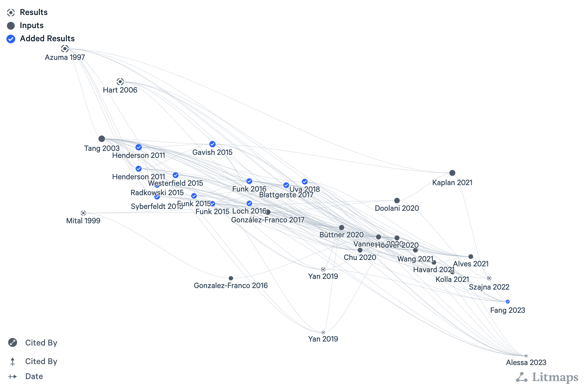
Broadly speaking, these tools link papers based on citation trees, bibliographic coupling, analysis of the citation statement, and other sophisticated methods. From their original findings, users can interactively traverse connected papers in graph and/or timeline view, focus on specific authors or collaborators, and otherwise refine the search. Abstracts and links to the papers are available throughout the process to guide exploration.
Integrating traditional and modern approaches in this iterative and exploratory fashion teased out unexpected connections, incorporated a wider range of sources, and facilitated the author’s understanding of relevant discourse across multiple dimensions, including time, application context, and research domain. This iterative process was repeated for each question and topic area. The resulting reference collections were imported into Zotero, which managed the bibliographic data and related PDFs. Notes made while reading these sources were imported to Obsidian for review and synthesis.
This approach involves several sources and tools, the implementation of which creates technical challenges that may dissuade many researchers. Over time, as the benefits are better understood and more integrated workflows emerge, it seems likely that it will become widely adopted.
2.2 Chapter Overview
The adoption of augmented and mixed reality (AR/MR) technologies for manufacturing training has shown promise, yet faces significant barriers that hinder widespread implementation. This literature review provides a comprehensive examination of this technology and related research. It begins by describing the challenges faced by the manufacturing industry in the I4.0 era, highlighting the need for effective and efficient training methods to address the growing skills gap. That provides the context and motivation for this study, and introduces extended reality devices as essential components of the I4.0 technology stack.
The chapter continues with a thorough review of XR technologies, including their history, applications, and potential for training and support in the evolving landscape of manufacturing. It details the human and technical requirements of XR and the trade-offs required for its successful adoption in manufacturing settings. This knowledge provides a foundation for assessing the value of XR in manufacturing applications and designing the study that follows.
The review next covers preliminary results highlighting the potential benefits of AR/MR in manufacturing, before exploring the theoretical basis for these benefits. This focuses on differentiating AR from VR and examining relevant theories of learning and cognition. The review then addresses the barriers to widespread adoption of AR/MR in manufacturing, including technical limitations, market considerations, and social/legal issues. A number of empirical case studies are reviewed to better understand the quantifiable benefits of AR/MR in this domain. Finally, existing tools and frameworks for the development and assessment of AR/MR systems in manufacturing training are examined. The review concludes by summarizing the findings, describing the proposed framework, and enumerating important considerations for future research.
2.3 Advanced Manufacturing
Ongoing changes in manufacturing are expected to have profound impact on the people, businesses, and governments of the world. The so-called Fourth Industrial Revolution (4IR) follows prior revolutions of mechanization, mass production, and digitization, and is the first to be predicted in advance, not observed after the fact (Drath & Horch, 2014). First described by German economist and founder of the World Economic Forum, Klaus Schwab (2015), 4IR is driven by today’s rapidly evolving and converging digital technologies. Brynjolfsson and McAfee (2014) note that these Second Machine Age advances uniquely exhibit sustained exponential rates of improvement while being easily combined and efficiently distributed. The innovative fusion of these cross-disciplinary technologies is transforming our physical, digital, and biological worlds in unprecedented ways.
2.3.1 Industry 4.0
Four years before Schwab’s 4IR keynote, European manufacturing leaders had already imagined the potential benefits of digital convergence. In January of 2011 Germany’s BMBF (the Federal Ministry of Education and Research) announced a new initiative. “Industrie 4.0” (I4.0) was introduced as the digital transformation of manufacturing, a paradigm shift intended to protect and expand Germany’s influence as a world leader in the sector (Kagermann et al., 2011). Since then, I4.0 has become a prominent trend in Advanced Manufacturing. Its adoption is driven by a combination of application-pull (social, economic, and political change) and technology-push (automation, digitalization, communication, and miniaturization) market factors (Lasi et al., 2014).
I4.0 is a data-driven approach to manufacturing, where product specifications direct aspects of production. This is accomplished with connected, automated, autonomous components that respond in real-time to variable requirements (Negri et al., 2017). I4.0 is therefore advocated as the means by which manufacturing operations can meet modern organizational and societal demands for increased decentralization, flexibility, and resilience (Tao & Zhang, 2017). Time and cost to market and productivity are also expected to improve, along with sustainability measures, including energy cost and emissions. There is widespread optimism for these outcomes and their positive overall effect on global economic growth (Kagermann, 2013).
That optimism has encouraged the adoption of I4.0 methods worldwide. The Industrial Internet Consortium (IIC), founded by AT&T, Cisco, General Electric, IBM, and Intel, is the most prominent of several I4.0-related alliances in the United States (Hardy, 2014). As of 2021, the IIC (now known as the Industry IoT Consortium) boasts more than 150 member companies. Other major initiatives are underway in the UK, Taiwan, Japan, South Korea, France, Turkey, and more (Oztemel & Gursev, 2020). As of 2015, China was reportedly investing over $200B / year to related research and development. This bid to move from imitator to innovator is a clear signal of the returns that China expects from new markets and efficiencies unlocked by its I4.0 transformation (Woetzel et al., 2015).
Though a crisp definition of I4.0 might be expected given the support it has received, the literature is sorely lacking. It seems that “Industry 4.0” simply emerged as the most popular of several names given the technology-driven manufacturing renaissance that was commonly expected to result from its digital transformation (Culot et al., 2020). The integration of adjacent schools of thought, including “Industrial Internet” (Evans & Annunziata, 2013) and “Smart Manufacturing” (Radziwon et al., 2014), partially explains the lack of a standard definition for I4.0. Rapid divergent development by academics and practitioners and overzealous marketing have also contributed to the diffusion of this idea.
In fact, the literature suggests that I4.0 is best understood as a general concept, philosophy, or vision of manufacturing characterized by a group of functionalities, including process integration, real-time information transparency, virtualization, and autonomy, and their enabling technologies (Culot et al., 2020).
I4.0 has been linked to over 1200 technological components, from 30 disciplines (Chiarello et al., 2018). To provide a useful definition of I4.0 in terms of the technologies involved, some abstraction is essential. In their review of over 100 relevant and credible sources, Culot, et al. (Culot et al., 2020) identified 13 categories of technology. Each was assessed along two continua: software-hardware technology and local-global connectivity, as seen in Figure 2.2.
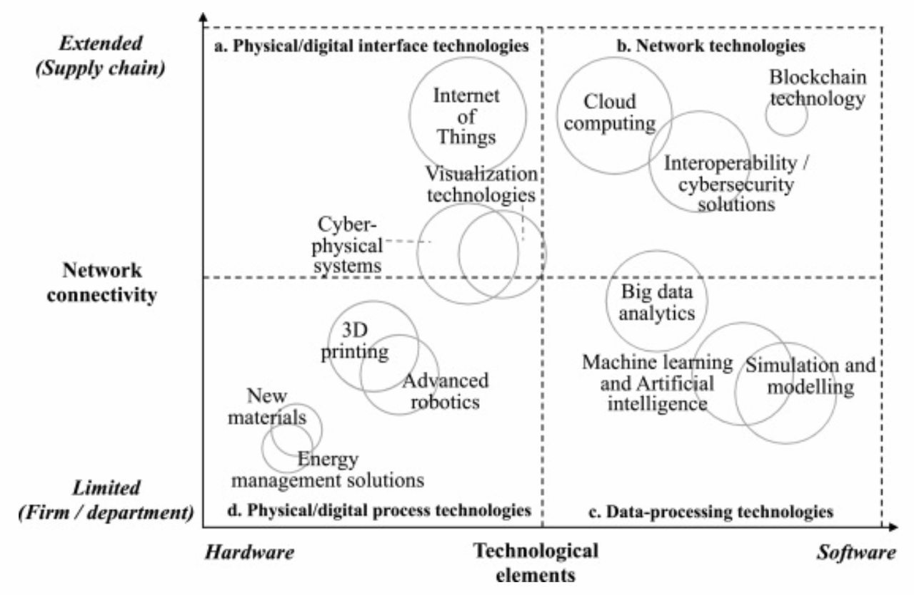
Four technology quadrants emerge in this figure: (a) physical-digital interfaces, (b) networking, (c) data-processing, and (d) physical-digital processes. The sensing, connecting, and analyzing activities of the first three quadrants are what differentiate I4.0 from advanced manufacturing.
As described in the next section, the specific technologies and the manner in which they are integrated and applied define an I4.0 system. The permutation of possible outcomes, each a different embodiment of the I4.0 concept, is the ultimate source of definitional ambiguity in this field.
2.3.2 Cyber-Physical Systems
Cyber-Physical Systems (CPSs) is an emerging cross-disciplinary field engaged in the design of new models and methods for problems at the intersection of physical and digital engineering traditions (E. A. Lee, 2015). It was simply defined in E. Lee’s seminal paper (E. A. Lee, 2006) as the “integrations of computation with physical processes.” CPS promotes the novel evolution of classic embedded systems through their interconnection and integration with computation and control mechanisms. This enables the real-time autonomous control of large engineering systems (E. A. Lee, 2006; Pascual et al., 2019). Though commonly associated with I4.0, CPS is independent of specific applications or implementations, e.g., I4.0 and IoT.
CPS enables I4.0 by integrating the previously identified sensing, connecting, and analyzing capabilities to “monitor and control physical processes, usually with feedback loops where physical processes affect computations and vice versa” (E. A. Lee, 2006). An I4.0 CPS is comprised of physical objects, networked data models of those objects, and services based on that data (Drath & Horch, 2014). Their technical building blocks are summarized below (Bottani et al., 2017):
- Internet of Things (IOT) - sensored networked devices
- Machine-to-Machine (M2M) - interconnected, interoperable systems
- Digital Twin (DT) - mirroring of physical and virtual objects
- Cloud Computing - distributed computing services
- Big Data - large scale data capture, storage, and analysis
- Modeling - data or physics driven methods for descriptive, diagnostic, predictive, and prescriptive analysis
- Extended Reality (XR) - virtual, augmented, or mixed reality visualization and interaction
- Advanced Manufacturing - including additive methods, automation, and robotics
To understand their roles in an I4.0 CPS, J. Lee’s 5C Architecture is instructive (J. Lee et al., 2015). This popular framework identifies five implementation activities in step-wise fashion: get data from sensors, convert data to information, analyze information, present data, and provide control feedback. These activities correspond to the 5Cs of Connect, Convert, Cyber, Cognition, and Configuration, as depicted in Figure 2.3, with related attributes.
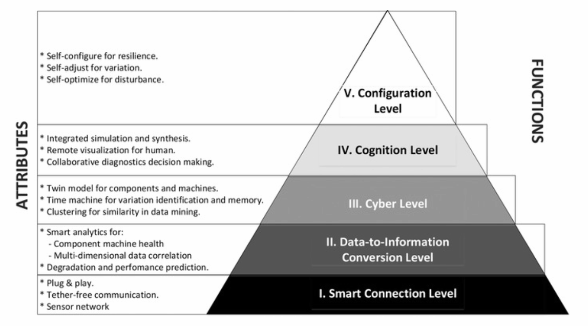
In this framework IOT and M2M enable smart Connections between sensored devices. In the Conversion level Big Data collects and contextualizes the data. Virtual representations of the physical components are created by Digital Twins in the Cyber step. Extended Reality devices aid visualization and Cognition. Various Modeling methods are employed throughout to support manual and automated decision-making. The Cloud Computing architecture integrates it all and facilitates feedback in Cognition. The resulting closed loop system drives Advanced Manufacturing processes in real-time.
Ideal I4.0 CPS systems are fully integrated within the enterprise: horizontally, vertically, and across the system life-cycle. Horizontal integration occurs across the value chain, from supplier and production to end customer. Vertical integration covers the manufacturing hierarchy, from the shop floor to enterprise planning (Pascual et al., 2019). Fully realized systems are driven by individual product specifications, maximizing flexibility and resiliency, along with their attendant social, market, and sustainability benefits. Taken to the limit, such systems are capable of operating with a batch size of one, the ultimate Lean Manufacturing benchmark and the key to unlocking mass personalization and customization (Culot et al., 2020; Kagermann et al., 2011; Lasi et al., 2014).
In the following section we focus on the heart of Lee’s 5C architecture, the Digital Twin.
2.4 Digital Twins
The Digital Twin is the mechanism by which I4.0 synchronizes the virtual and physical system states. It consists of a virtual replication of the system that is coupled to its physical counterpart via a bi-directional flow of sensor and control data. DTs enable a data-driven approach to life-cycle management that can employ optimal methods and practices for each environment. The continuous, bi-directional data flow and synchronization of an idealized DT differentiates it from traditional modeling and simulation methods which typically operate as off-line, asynchronous processes (Jones et al., 2020).
The DT concept was introduced by Michael Grieves in late 2002, partly inspired by dynamic CAD modeling methods that were then emerging. He originally promoted it as a tool for distributed, collaborative problem solving in product life-cycle management (PLM) (Grieves & Vickers, 2017). Grieves developed the idea under different names until 2011, when he first used the phrase Digital Twin to describe it (Grieves, 2011). Therein he credits collaborator John Vickers of NASA with coining the term, which also appeared in NASA’s draft strategy for Simulation-Based Systems Engineering in 2010 (Shafto et al., 2012).
Following similar growth in adjacent fields, interest in the DT concept has accelerated rapidly since 2016. While most research activity remains focused on Industry 4.0 applications, progress in academia and industry has led to some divergence in both interpretation and application of the concept (Ante, 2021). A 2017 survey of manufacturing literature found that no less than 16 unique definitions had been proposed for Digital Twin since 2011 (Negri et al., 2017). Despite the literature offering no common understanding of the term, the DT concept is recognized as a key enabler for I4.0 (Kritzinger et al., 2018).
2.4.1 The Synchronization Process
Jones described the DT synchronization process, also known as “twinning,” as a cycle of measuring and reflecting changes in the parameters of interest (Jones et al., 2020). During metrology, changes to one system state are measured. In the realization phase those changes are reflected in the other system. This process operates bi-directionally between physical and virtual entities, creating a system that is capable of continuous adaption. See Figure 2.4.
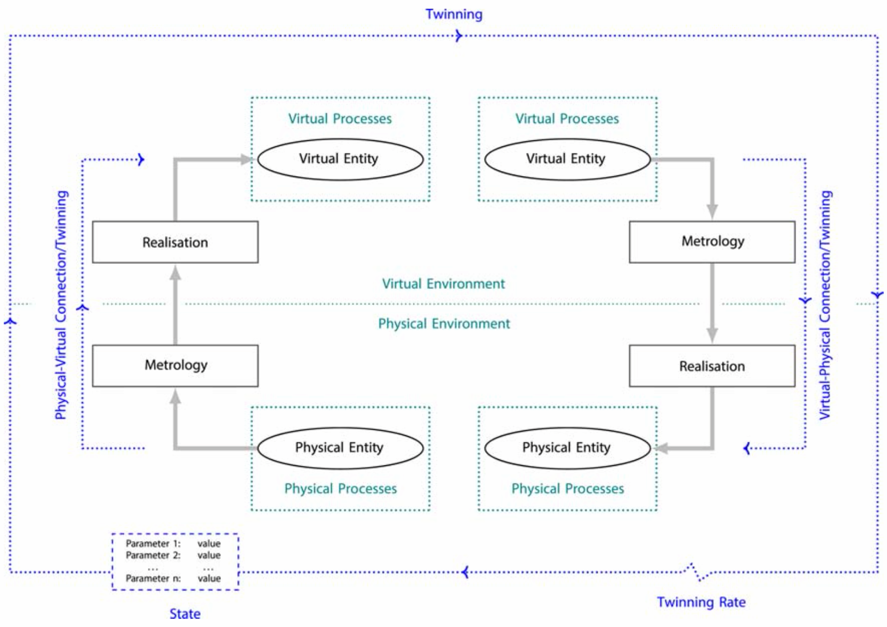
In Jones’ model the term parameter refers to the values synchronized by the DT. Common parameters are related to form, functionality, process, and performance. Examples include part tolerance, assembly time, and machine health. Parameters can be measured, computed, observed, or otherwise derived. The overall system state is described by the current value of all parameters. The fidelity of a DT is a measure of the number of parameters, their accuracy, and the level of abstraction involved (Jones et al., 2020).
The DT concept is not entirely new. Elements of it are evident in other fields, including Computer-Integrated Manufacturing and Virtual Manufacturing Systems, both of which predate Grieves’ work. Of those, only Model-Based Predictive Control, Advanced Control Systems, and Building Information Modeling (BIM) share DT’s approach to closed-loop control (Jones et al., 2020).
2.4.2 Life-cycle Considerations
This method is most valuable for objects that are changing over time, and when measurement data that can be correlated with this change can be captured (Wright & Davidson, 2020). To account for this, Grieves describes two manifestations of the Digital Twin: Prototype (DTP) and Instance (DTI). The DTP models a prototypical physical object, providing an idealized, immutable reference for that thing, including the means to produce physical instances of it. The DTI is the virtual reflection of a unique, as-built thing in the world. Multiple DTIs are maintained, each synchronized with a single instance of the physical object for the duration of its life-cycle (Grieves & Vickers, 2017).
The DT model is dynamic. In each phase of the system’s lifecycle (creation, production, operations, disposal) the directionality of metrology and reflection changes. Modeling tools are first used to develop and test the DTP in the creation phase. Physical instances are derived from the DTP in production, when their as-built specifications are captured and reflected in corresponding DTIs. During the operations phase the real-virtual link becomes bi-directional, synchronizing the system states and enabling continuous adaption. Finally, information about the system is used to properly dispose of it, before being archived for the benefit of future designs (Grieves & Vickers, 2017).
Data collected throughout this process is used by various modeling methods that support the Conversion, Cognition, and Configuration levels of Lee’s 5C architecture. The conversion layer primarily relies on descriptive and diagnostic approaches to interrogate and analyze system status. The cognition layer utilizes predictive methods to aid human understanding. Prescriptive methods that recommend specific actions are employed in the configuration level to drive continuous adaption through parameter optimization or policy selection (Bottani et al., 2017).
2.4.3 State of the Art
In 2017, Grieves set the lofty goal for models that “fully [describe] a potential or actual physical manufactured product from the micro atomic level to the macro geometrical level” (Grieves & Vickers, 2017). His position is representative of a bias towards fidelity that is commonly expressed in the literature, despite the absence of any example using more than a subset of the known parameters (Jones et al., 2020). Digital Twins that perfectly replicate the reality of complex systems in real-time may never be practical. Tradeoffs must be made between fidelity, accuracy, available compute, and update rate. Models need only be sufficiently physics-based, accurate, and quick to meet the system requirements in a trustworthy manner. This depends on properly managing model verification and validation, uncertainty, model selection, and associated metadata (Wright & Davidson, 2020).
We are still far from the idealized DT described above. Though many perceived benefits have been identified, few papers include quantitative analysis to validate those claims (Jones et al., 2020). Most research in the area is concept oriented. Of the few published case studies, most systems are uni-directional, with low fidelity and/or little integration (Kritzinger et al., 2018). Implementation relies on connections between physical and digital systems that are often difficult to implement without human involvement, and current modeling tools fall well short of understanding and replicating the physical world (Grieves & Vickers, 2017). Limited collaboration and a lack of technical standards are also commonly noted (Ante, 2021). Together, these shortcomings hinder development and slow adoption of the DT concept.
Though the research area remains immature, a number of additional frameworks have recently emerged in response to issues with standards, validation, fidelity, and interoperability. Grieves’ Tests of Virtuality (GTV) were proposed as a means to evaluate the fidelity and validity of a DT. Performance is assessed by comparing the look, behavior, and synchronization of a physical system and its virtual counterpart (Grieves & Vickers, 2017). Tao’s seminal paper describes the DT of a shop floor in terms of its architecture and technology. Architecturally, he identifies four integrated layers: geometry, physics, behaviors, and rules. The many necessary technologies are grouped into the five areas of interconnection and interaction, modeling and verification, construction and management, operation and evolution, and smart production services (Tao & Zhang, 2017).
At least two maturity models have been proposed. Kritzinger’s model is based only on the level of physical-virtual integration, as expressed by the Digital Model (DM), Shadow (DS), and Twin (DT) classification scheme. A DM has no connection or uses manual methods of data exchange. One-way flow of data characterizes the DS, while bi-directional flow is the hallmark of a DT (Kritzinger et al., 2018). Hyre’s model also considers how capability and complexity increase with a DT’s level of integration. Her 4Rs (Representation, Replication, Reality, and Relational) provide a framework for the incremental development of a DT that incorporates verification and validation of the system (Hyre et al., 2022).
2.4.4 DTs for the Development and Testing of Complex Systems
The physical-virtual synchronization of Digital Twins enables the operational benefits of an I4.0 CPS, as previously described. That twinning process requires a trustworthy virtual replication of the system, which offers many additional benefits for the development and testing of these complex systems.
A complex system is defined as one in which connections between the components are unfamiliar, unplanned, unexpected, and/or invisible, making it difficult to predict system states (INCOSE, 2015). Such systems are prone to “Normal Accidents,” in which cascading failures escalate suddenly and often catastrophically. Human inconsistency (following rules, processes, and procedures) and poor sensemaking (understanding what is perceived) often play a role in those accidents, especially in high stakes situations when good decision making is most critical (Perrow, 1999).
Complex systems are the domain of Systems Engineering, where traditional methods rely on the verification and validation of physical objects. This approach, exemplified by the commonly used Waterfall, Spiral, and Vee models, is expensive, centralized, and sequential. As a consequence, it focuses the scope of investigation on areas where undesirable effects are predicted. The most dangerous category of system behavior, that which leads to unpredicted and undesirable outcomes, is often first encountered when the system is deployed, creating the risk of catastrophic failure and harm to the users (Grieves & Vickers, 2017).
Digital methods are, by contrast, low cost, composable, and easily distributed (Brynjolfsson & McAfee, 2014). Trustworthy virtual systems can be tested more thoroughly than the physical equivalent, with less risk. Increased test coverage helps identify and mitigate unpredicted, undesirable outcomes. Reduced risk permits the evaluation of circumstances that traditional methods would not allow. Thus, DTs can test more broadly, including conditions that are uncommon or hazardous and/or involve interaction with a diversity of personnel. This directly addresses the leading causes of those “Normal Accidents” that we seek to avoid, and is a primary intended benefit of the Digital Twin (Grieves & Vickers, 2017).
2.4.5 DTs for Visualization
Though DTs are widely embraced as the synchronizing mechanism in an I4.0 CPS, and for the development and testing of complex systems, they offer another important benefit. As previously mentioned, the concept was first promoted as a tool for collaborative problem solving; a way for stakeholders to understand and visualize the current system state.
A Digital Twin improves problem solving and innovation by aiding the human processes of conceptualization, comparison, and collaboration. Effective visualization simplifies the cognitive steps involved in translating symbolic information, facilitating conceptualization. Overlaying the physical and virtual allows for direct comparison, which is ideal for human perception and analysis. Collaboration is enabled by digitally replicating and distributing the experience to an audience of stakeholders (Grieves, 2015).
Visualization is an essential outcome of the Digital Twin concept. High fidelity interactive visualizations of virtual systems can be shared globally in real-time using modern technology, allowing the direct, side-by-side visual comparison of the physical and virtual product. Today, the tools and technologies best suited to deliver on this promise are found in the area of Extended Reality.
2.5 Extended Reality
Extended Reality (XR) is the umbrella term for a range of technologies where human-machine interactions occur in environments that blend real and simulated stimulus (UL, 2022). XR covers the entire Virtuality Continuum (VC), as famously described by Milgram & Kishino (1994), and pictured in Figure 2.5.
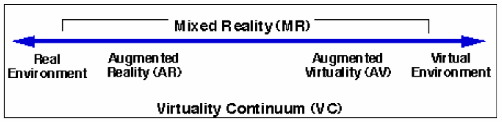
This continuum spans the complete range of real to synthetic experiences. Though typically associated with adding or replacing visual stimulus, the VC also includes technologies that are subtractive in nature and/or affect other senses. For example, noise cancellation headphones can be considered a form of “diminished reality” audio AR device (Kress, 2020).
2.5.1 Origins of XR
Many precursors to XR can be identified in the 1800s and early 1900s, culminating in Morton Heilig’s patented head-mounted display (HMD) in 1960, which boasted 140° field of view, stereo earphones, and air / scent discharge nozzles (Heilig & States, 1960). As seen in Figure 2.6, images from the 60 year old filing are surprising in their familiarity. Soon thereafter, engineers at the Philco Corporation created the first such device that tracked the wearer’s head motion and updated the display accordingly (Jerald, 2016).
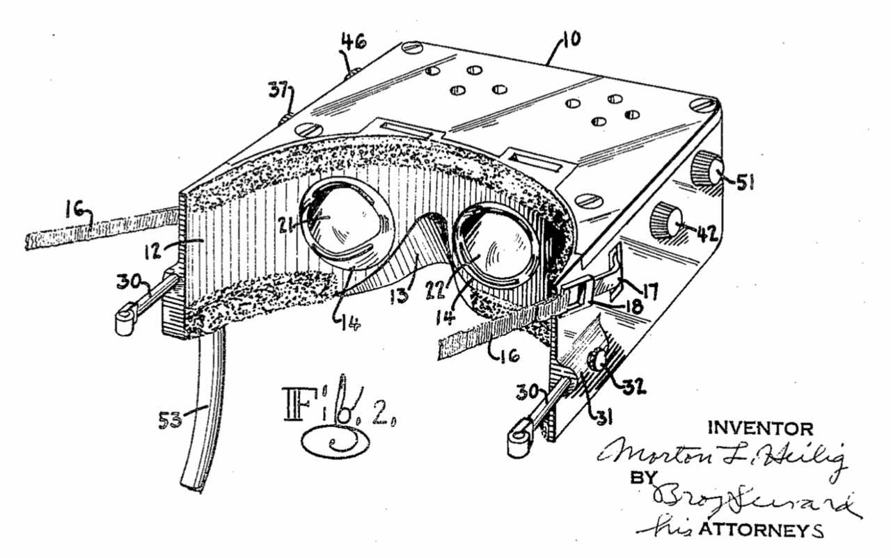
In 1965 Ivan Sutherland10 published The Ultimate Display, which described his vision for a “kinesthetic display” at a time when “the ability to draw simple curves would be useful” (Sutherland, 1965). In it, he commented:
A display connected to a digital computer gives us a chance to gain familiarity with concepts not realizable in the physical world. It is a looking glass into a mathematical wonderland.
Three years later, Sutherland and his students at the University of Utah were first to demonstrate a HMD that combined tracking and computer generated imagery. The device, known as the Sword of Damocles, is the original prototype for all modern VR technology. Its name was in reference to the story of King Damocles, owing to the precarious position the device maintained over a user’s head (Kiyokawa, 2015). It took nearly 30 years for its AR equivalent to emerge.
In 1994 Ronald Azuma presented the first AR system capable of accurately maintaining the spatial registration of real and virtual objects based on changes to the user’s viewpoint. Key contributions of that open-loop system included custom hardware, calibration, and head pose prediction methods (Azuma & Bishop, 1994).
Commercial interest in XR has since experienced alternating periods of boom and bust, fueled by promises that exceeded the technologies of the time. Through it all, research in the corporate, government, academic, and military sectors continued. Capitalizing on the runaway success of the smartphone industry following the 2007 iPhone launch, the current wave of XR began to emerge in 2012. This generation of hardware leveraged newly available components, including displays,11 processors, batteries, cameras, and sensors, along with the maturing software infrastructure, to offer products that were more sophisticated and compelling in all sectors (Kress, 2020).
Emblematic of that shift is Field of View To Go (FOV2GO), an experimental, untethered, DIY HMD developed in the Mixed Reality Lab at the University of Southern California’s Institute for Creative Technologies, and first shown at the IEEE VR conference in 2012 (Olson et al., 2011-03-19/2011-03-23). Their design utilized two iPhone 4’s as displays with an off the shelf lens assembly and tracking system, all mounted on a cardboard body. Software was powered by the Unity game engine and a Python script. Their conference poster is pictured in Figure 2.7.
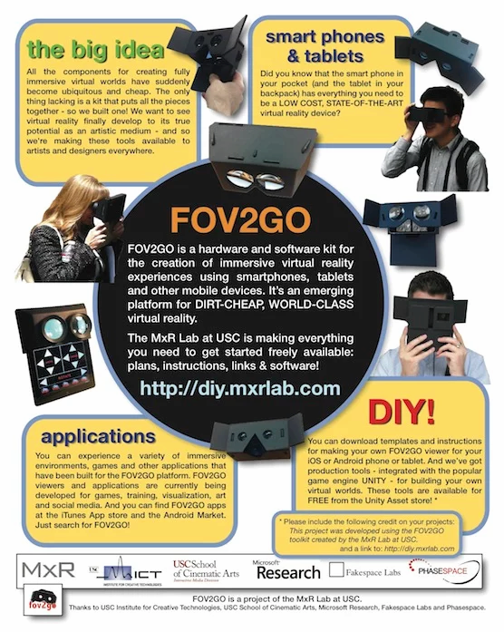
FOV2GO team members founded Oculus VR soon thereafter and demonstrated a prototype of their Rift VR HMD in June of that year. The Rift Kickstarter campaign launched in August, meeting its $250,000 funding target in less than four hours and securing over $2.4m in total. Oculus subsequently raised over $90m in venture capital before being acquired by Facebook for $2b in March of 2014 (Jerald, 2016).
XR has experienced tremendous growth and development in the last 10 years. Many declinations of XR have been identified, including Virtual, Augmented, Mixed, Blended, and Merged Reality. The literature identifies significant overlap and some disagreement in their interpretation. Of those, virtual and augmented reality are the most agreed upon terms.
2.5.2 Virtual and Augmented Reality
Virtual Reality (VR) is a synthetic, multi-sensory experience that imitates real-world interactions. VR is a very concrete concept in which purely synthetic environments are experienced through opaque HMDs, via interactions that are primarily controller-based. This combination of familiar features has been experienced by many, thanks to the availability and maturity of consumer devices like the Meta Quest. VR is widely understood as a way to provide immersive experiences that lead to the sensation of presence.
Immersion is the degree to which an XR experience provides consistent, believable inputs with corresponding outputs. It is a function of the range and congruence of the sensory modalities involved, the quality and spatial cohesion of the displays used, and the simulation’s responsiveness to user interaction (Slater & Wilbur, 1997). Vividness and interactivity are often cited as the functional mechanisms underlying the efficacy of XR (Jiang & Benbasat, 2007; Steuer, 1992). A study by Yim et al. (2017), involving over 800 US college students found that immersion plays a mediating role in that relationship. That is, vividness and interactivity promote immersion, which promotes presence.
Yim’s study defined vividness as the ability of the technology to display high fidelity stimuli over multiple sensory channels. Interactivity was described as a function of both the underlying technology, including responsiveness, interface, and overall level of interaction supported, and the quality of the experience’s design and implementation. Together, technology and design enable and engender interaction (Yim et al., 2017). The depth of immersion is a characteristic of the hardware and software involved, and its effects are subjective. The way different users experience immersion is known as presence.
Presence refers to a psychological state that can result from immersion, and is commonly defined as “a sense of being there” (Cummings & Bailenson, 2016). Presence is associated with an “illusion of nonmediation,” where users fail to perceive or acknowledge the existence of the interfacing technology and act as if it were not there (Lombard & Ditton, 1997). A strong sense of presence leads to experiences that are perceived as real, generating cognitive, psychological, and behavioral effects that are similar and long-lasting (Bailenson, 2018). While presence can also occur in AR, other mechanisms of the medium have a stronger, more valuable effect.
Augmented Reality (AR) is a more abstract and nuanced concept which has so far refused to converge on a single implementation. As originally described in Azuma’s highly cited first survey of the field, Augmented Reality (AR) systems “combine real and virtual, are interactive in real time, and are registered in 3-D” (Azuma, 1997). The value of AR comes from its ability to enhance a user’s natural interaction with and perception of the real world.
Azuma’s definition demands real-time interaction with a spatially coherent mix of real and virtual objects. This new interface paradigm is based on concepts that would become known as Spatial Computing, which Greenwold defined as “human interaction with a machine in which the machine retains and manipulates referents to real objects and spaces” (Greenwold, 2003). In this way, AR proposes to replace metaphorical input devices like the keyboard and mouse with sensor-based interfaces that directly measure and interpret the world and our actions in it.
In a general sense, AR systems can enhance perception by mapping any sensor input to any mix of displays, allowing users to see, hear, feel, etc. in ways not normally possible. Sensor inputs can refer to either raw data from a single measurable phenomenon or “fused” data developed from multiple sources. Interaction also benefits from the user’s improved understanding (Azuma, 1997).
Traditional AR and VR devices integrate computation, sensors, and displays into a HMD, which may suggest they offer a similar experience and benefits. Both offer novel forms of visualization and interaction, but the essential characteristics of each are entirely different. In the study of interaction design and related fields these characteristics are referred to as affordances, the quality or property of an object that defines its possible uses or makes clear how it can or should be used (Norman, 2013). For example, a button affords pushing and a handle affords pulling.
VR is a new medium that immerses the senses in a virtual replacement for reality and, through the psychological phenomena of presence, mimics the effects of as-lived events (Bailenson, 2018). AR is a new model of computing that augments our perception of reality and, through a natural, spatially connected interface, enhances our understanding of and interactions with the real world (Azuma, 2019). Where VR is an extension of games and film, AR is seen as the most likely next step on the path towards ubiquitous computing.
2.5.3 Ubiquitous and Wearable Computing
Ubiquitous computing is the idea, first proposed by Weiser at the Xerox Parc research lab in 1988, that technology should or will be completely assimilated, disappearing into the woodwork of our lives (Weiser, 2002). The steady march of miniaturization began with the invention of the transistor and has continued ever since. Today this trend presses the limits of human physiology, where human interfaces, not computational considerations, constrain the size of machines. Ubiquitous computing requires the replacement of physical interfaces with more natural mechanisms (Greenwold, 2003).
In the field of wearable computing, the assimilation of technology is the goal. A wearable computer is any worn or body-borne computer that is designed to provide useful services while the user is performing other tasks. Their on-the-go use and background operation are the primary characteristics that distinguish wearables from other computing devices. This is accomplished through interfaces designed to be unobtrusive and unencumbering, if not entirely hands-free (Starner, 2015). From the beginning, research in the field has been ego-centric, i.e., focused on the user and their interaction with the world. Devices that supplement the user’s memory and data retrieval, or augment their view have been demonstrated since the late 1990s (Billinghurst et al., 2015). Wearables are always-on devices that rely on sensor-based interactions with and between the user and their environment (Barfield, 2015).
The potential benefits of such a device have been recognized by industry since the 1990s, when AR R&D was already exploring the areas of medical visualization and training, manufacturing and repair, annotation and visualization, robot path planning, entertainment, and military aircraft navigation and targeting (Azuma, 1997).
2.5.4 XR Devices
While VR has converged on a singular form, Azuma’s definition of AR is not constrained to any particular display type or “mix” of real and virtual. As such, XR includes a diverse range of possible devices, each best suited for different use cases. This is summarized in Figure 2.8 from Bernard Kress’12 2020 book, Optical Architectures for Augmented-, Virtual-, and Mixed-Reality Headsets (Kress, 2020). Kress divides the range of XR HMDs into four classes: smart eyewear, VR, AR, and Mixed Reality. In his taxonomy, Mixed Reality refers to AR devices with the precise world tracking capabilities and other advanced spatial features.
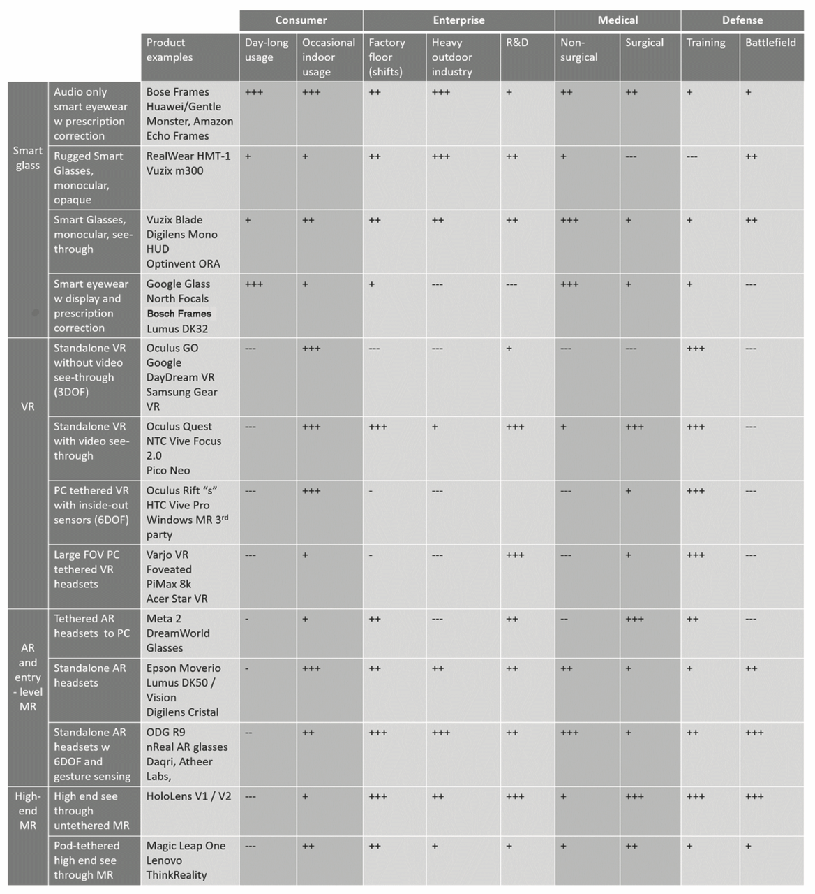
From this chart it can be inferred that HMD physical configurations vary by:
- form factor: overall size, shape, and balance
- displays integrated: visual, audio, haptic etc.
- visual display type: opaque or optical / video see-through
- visual display ocularity: monocular, binocular, or stereo
- visual display location: centered or offset in the user’s field of view
- tracking: none, three, or six degrees of freedom
- input modalities: controllers and/or gestures
- tethered or standalone
- integrated vision correction
World-fixed and hand-held alternatives to HMD XR must also be considered. World-fixed solutions use projectors or flat panel displays to surround the observer / participant with imagery. This is typified by the Cave Automatic Virtual Environment (CAVE13) invented in the Chicago Electronic Visualization Lab at the University of Illinois (Cruz-Neira et al., 1992). Hand-held XR implementations are common on smartphone and tablet devices, where integrated cameras, displays, and sensors enable screen-based AR that is device-centric (i.e., motion and display are relative to the device, not the user’s head and eyes) (Jerald, 2016).
XR devices, particularly AR HMDs, are not “one size fits all.” In addition to their physical configuration, key specifications strongly dictate the intended purpose of a device and its suitability for specific tasks. Technology limitations and the diverse requirements found in different application domains force trade-offs in system design and selection (Kiyokawa, 2015). Subsequent sections will discuss each of those considerations in greater detail.
2.5.5 XR HMD Requirements
All modern XR HMDs are complex devices comprised of display, sensing, compute, and power management systems. Optical see-through (OST) devices require additional components to project and combine the image in the user’s field of view. Figure 2.9 depicts the major sub-systems of an OST HMD (Kress et al., 2020). The peak complexity of an idealized OST AR HMD provides a comprehensive case study in the tradeoffs and benefits of XR. Lessons learned from state of the art requirements and architecture apply, in limited fashion, to devices with a reduced feature set.
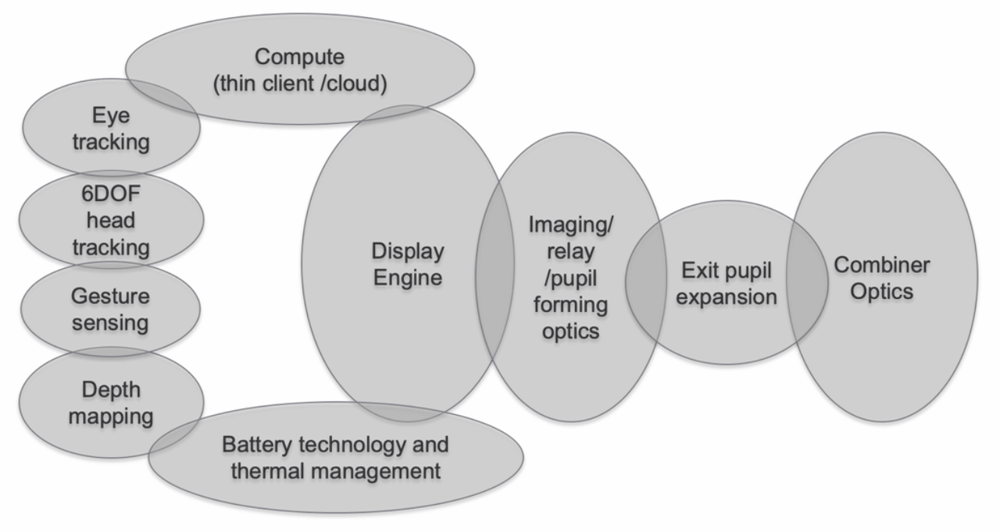
Mixed Reality (MR) is the label given by Kress to advanced AR devices with the precise head tracking, gesture sensing, and depth mapping capabilities required to support spatially synchronized interactions, providing an elevated and differentiated user experience (Kress & Cummings, 2017). He measures the ultimate quality of that experience in two dimensions: comfort, including wearable, vestibular, visual, and social components; and immersion, a function of all sensory input and output. Given the goals of comfort and immersion, an extensive list of design requirements can be derived for idealized MR devices. In Figure 2.10, dark grey shading indicates features that are reliant on fast, accurate, universal eye tracking, a critical enabling technology for idealized MR HMDs.
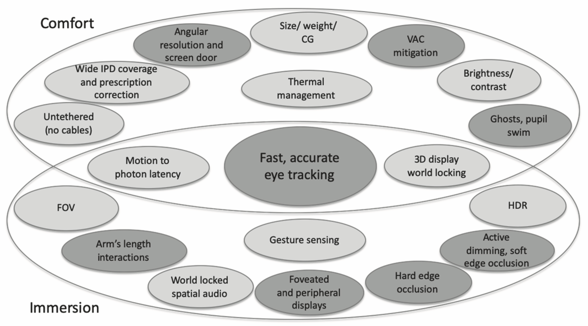
This summary reflects other findings in the literature which identify requirements related to precise tracking, form factor, brightness / contrast, field of view, latency, resolution, occlusion, frame rate, depth of field, and visual discontinuity (Azuma, 2017; Fischer, 2015; Gay-Bellile et al., 2015; Jerald, 2016; Kiyokawa, 2015; UL, 2022).
Visual comfort is a function of both the display features and the overall speed and accuracy of the integrated sensor output. Sensor fusion refers to that integration process and the hardware / software system that accomplishes it. Figure 2.11 depicts the inputs and processing flow for a typical system. The demands of sensor fusion have led companies like Microsoft to design custom processors to provide the best user experience (Kress, 2020).
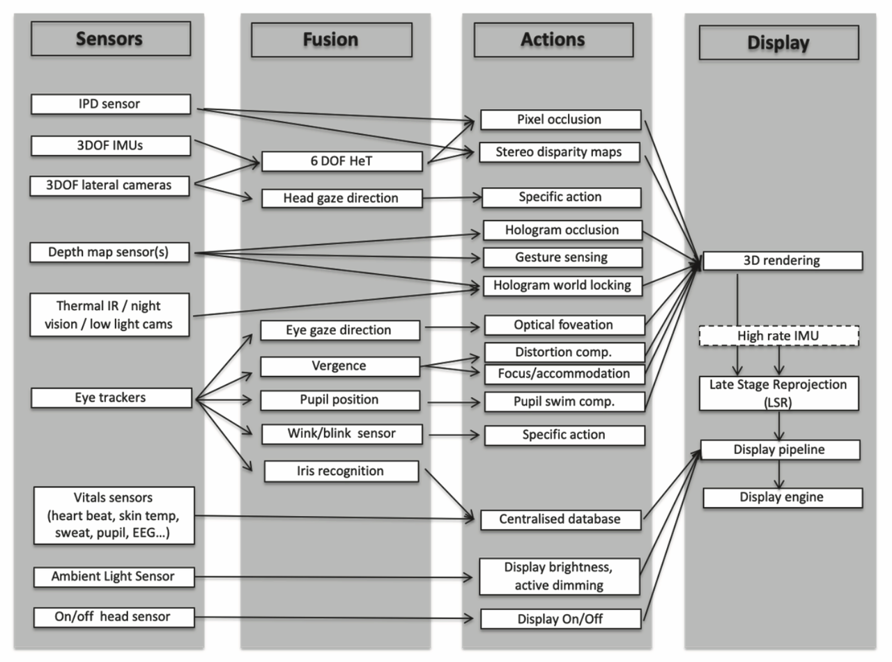
High-level considerations in the design of HMD systems include tradeoffs between real world visibility and pictorial consistency, FOV and angular resolution, near and far accommodation, and the importance of perceived depth, which is influenced by occlusion and ocularity (Kiyokawa, 2015). Directly conflicting requirements are common in OST HMD design, where the tight interdependencies of these sub-systems and ambitious overall requirements necessitate a global optimization approach to design (Kress et al., 2014). Knowledge of the human factors involved can aid the process.
2.6 Human Factors
A human-centered approach to HMD development allows designers to tailor requirements to human needs rather than absolute measures of performance, reducing system complexity without impact to the immersiveness or comfort of the experience. The following sections provide a brief overview of human factors related to vision, balance, and motion. The senses involved are critical to both immersion and comfort.
2.6.1 The Visual System
Optical components of the eye, including cornea, iris, pupil, and lens, coordinate to focus an image on the surface of the retina, where photosensitive cone and rod cells translate it into signals sent to the brain via the optic nerve. Cones are adapted to provide detailed color vision in high illumination. They are concentrated in the fovea, near the center of the retina, maximizing the eye’s resolving power around the line of sight. Conversely, rods are concentrated in the visual periphery. They perform well in low light and are optimized to detect fast motion or flicker. The resulting signals follow different visual pathways in the brain, where they are strongly influenced by other sensory systems and cognitive processes, forming our subjective, conscious perception of the experience.
2.6.1.1 Visual Acuity
Visual acuity refers to a group of measures for human visual performance, including separation and recognition acuity. Separation acuity is the ability to resolve fine details at a distance. Specifically, it is the smallest angular separation that can be resolved between neighboring black stripes on a white background. One arc minute (1/60th of a degree) is the lower limit for “normal” separation acuity, corresponding to a gap of just over 1/16” (1.75mm) when viewed from 20’ (6m). This attribute of human vision is rarely measured directly. Instead, recognition acuity tests like the Snellen eye chart are designed to assess separation acuity via the discernment of shapes or symbols. The results are given as a ratio expressing the acuity of the subject relative to someone with “normal” (20/20) vision. For example, “20/40” indicates half the normal acuity. Visual acuity is influenced by the entire optical-neural path, but is primarily a function of the cones and varies with their distribution in the field of view. These concepts are illustrated in Figure 2.12.
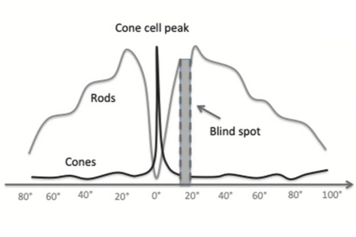
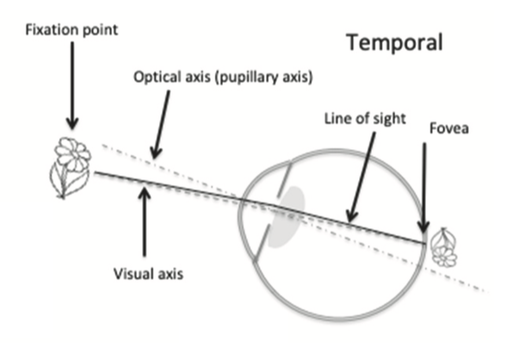
2.6.1.2 Field of View
Field of view (FOV) is the angular measure of the environment that is visible at any instant. As shown in Figure 2.13, the horizontal FOV is approximately 160 deg for each eye, and 200-220 deg combined. Vertical FOV is slightly smaller, with a slight downward bias. Overlapping monocular vision creates a central binocular range of 120 deg with vertical asymmetries caused by the facial profile.
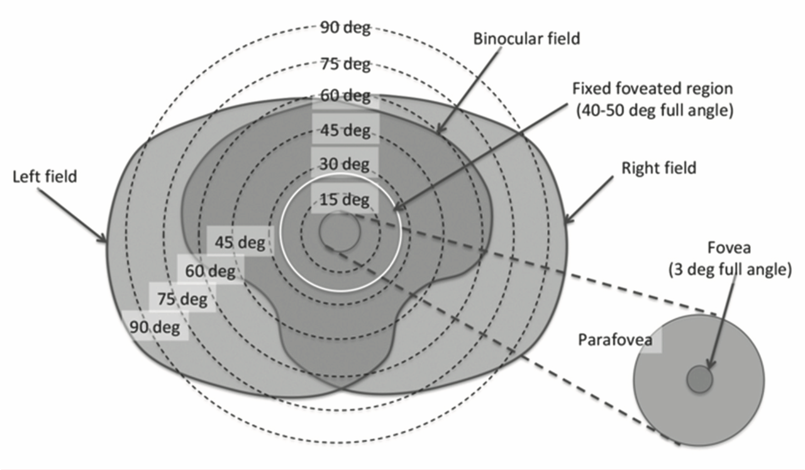
Though depicted in static terms, the FOV is dynamic due to continuous voluntary and involuntary eye motions that balance our directed attention with general awareness while accounting for motion of the head, body, and environment.
2.6.1.3 Stereopsis and Depth Perception
Due to the separation of binocular vision, a slightly different view of the world is observed in each eye. In a process called stereopsis, the brain processes these disparities to form a single percept with a sense of depth and three-dimensional structure. In a related process called vergence, a variety of depth cues trigger the inward (convergence) or outward (divergence) rotation of the eyes to effectively regulate binocular vision. When vergence occurs, it triggers the natural focusing reflex known as accommodation.
Other than the binocular disparities described above, the strongest triggers for the vergence-accommodation reflex are occlusion and motion parallax. Occlusion occurs when nearby opaque objects naturally obscure more distant objects. Motion parallax is the phenomena where an object in motion appears to move at different rates based on its depth in the scene.
2.6.2 The Somatosensory System
The somatosensory system is a part of the sensory nervous system responsible for the perception of touch, temperature, body position, balance, and pain. It is a network of sensory receptors and neurons spread throughout the body and brain. Within this system, proprioception and balance, which enable our awareness of the body’s dynamic and kinematic state, are most relevant to the design and use of HMDs.
2.6.2.1 Proprioception
Proprioception is the egocentric sense of movement, force, and body position. Through largely subconscious processes it provides the feedback mechanism necessary for effective coordination, refinement, and regulation of body motions. Specialized neurons distributed throughout the musculoskeletal system sense joint extension and limb position, velocity, and resistance. Signals from those proprioceptors are integrated with information from the visual and vestibular systems to create a sense of the body’s overall state, enabling fast and unconscious execution of planned and reflexive behaviors. Proprioception is essential to both voluntary and involuntary motor control activities. It drives the continuous adjustment of body posture required to maintain balance and is a critical contributor to the process of learning and perfecting motor skills.
2.6.2.2 Balance
Equilibrioception is the sense of balance and spatial orientation. It is the integrated perception of stimuli from the visual, proprioceptive, and vestibular systems. Two organs of the inner ear comprise the vestibular system: semicircular canals and otolith organs. Three semicircular canals located in the labyrinth of each ear sense rotation around their orthogonal axes. Movement of fluid in the canals is sensed as pressure changes, which are signaled to the brain. In the otolith organs, signals from hair cells are triggered by head motion. Those signals are interpreted by the brain to distinguish head tilt from body motion and sense the lateral and vertical components of acceleration.
Rotational and translational stimuli from the vestibular system are used to control posture, as described above, and eye movement, via the vestibulo-ocular reflex (VOR). VOR helps stabilize gaze direction as the head moves by directing opposing eye movement to compensate. This limits retinal image slip by maintaining the visual point of interest in the center of the field of view.
2.7 Enabling Immersion
The immersiveness of an XR experience is limited by the ability of the hardware and software systems involved to create an illusion that is cohesive and undistracted. Understanding the human factors involved, as described above, can help achieve that. The following sections will explore the technical underpinnings of vividness and interactivity, the primary components of immersion.
2.7.1 Resolution and FOV
Resolution and FOV are key measures of the fidelity for visual display devices. For near-to-eye (NTE) displays found in HMDs, resolution is typically expressed in dots per degree (DPD), rather than dots per inch (DPI) or raw pixel counts, as in conventional displays. An angular resolution of 50 DPD (1.2 arc minute) roughly corresponds to the resolving power of 20/20 vision (Kiyokawa, 2015).
The FOV of an HMD includes the aided region, where real and virtual images are overlaid; the peripheral region, outside the aided region; and the occluded region, where vision is obscured by the device (Kiyokawa, 2015). FOV specification in HMD design must identify the angular span, aspect ratio, and location of the aided region within the user view. These decisions are interrelated and driven by task and market requirements (Kress, 2015). Figure 2.14 depicts the range of implementations found in state of the art XR HMDs, overlaid on the binocular FOV and the fixed foveated display region (Kress, 2020).
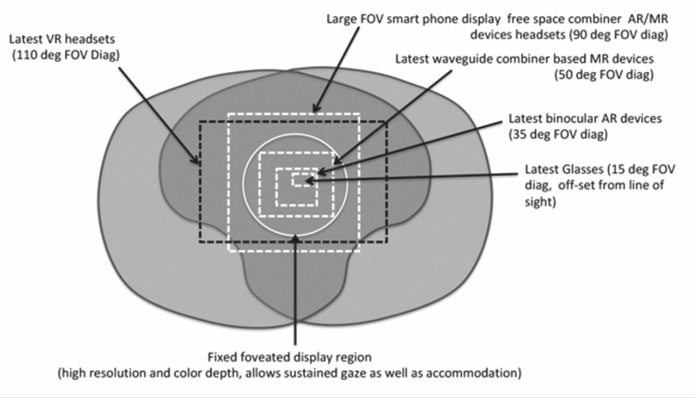
Very high pixel counts are required for ideal resolution in wide FOV devices. For example, a 16:9 display with 50 DPD angular resolution and 160 deg horizontal FOV per eye, would require 8,000 x 4,500 pixels. Two such displays (one per eye) would have more than eight times pixel count of a modern 4k monitor (3,840 x 2,160).
Such devices will not soon be practical. Meanwhile, pixel doubling and other mitigating techniques can improve perceived resolution. Foveated displays offer an alternative that exploits the bi-modal nature of human vision. This emerging technique renders a high resolution region, positioned either statically, central to the field of view, or dynamically, based on eye tracking. This image is combined with a lower resolution peripheral display using digital or optical methods (Kress, 2020). AI-based methods also show promise (Kaplanyan et al., 2019).
2.7.2 Frame Rate and Latency
Frame rate is the number of times the rendered scene is updated per second. It can be different from the system update rate, which is the rate at which the display updates. Both are typically on the order of 30-120Hz, with most modern XR devices operating at 60-90Hz. High frame rates increase the smoothness of motion, approaching the continuous nature of real world visuals. Update rate is a fixed property of the display hardware, but frame rate depends on the scene complexity and visual fidelity, along with hardware and software performance. The inverse of frame rate, rendering time, contributes to overall system latency. Tradeoffs must be made in the design and implementation of XR experiences to achieve the desired visual performance and limit system lag (Jerald, 2016).
Latency is the lag between head motion and update of the rendered scene, resulting in discrepancies between the user’s visual and vestibular senses. In optical see-through systems this results in registration error, which leads to confusion, disorientation, and motion sickness. To compensate, head motion prediction and other methods are used (Kiyokawa, 2015). Specifically, motion-to-photon (MTP) latency of no more than 20ms, and ideally less than 10ms is recommended in the literature (Albert et al., 2017). Because MTP latency greater than 20ms is a key factor in motion sickness, this is a foundational requirement of HMD design (UL, 2022). Approaching this goal compels optimization of the entire pipeline, including custom silicon designs for the sensor fusion process.
2.7.3 Pictorial Consistency and Visual Quality
Visual quality is an assessment of the visible stimuli produced by an XR device. It is a qualitative measure of vividness, also described in the literature as realness, realism, or richness (Yim et al., 2017). Key contributors, including geometric resolution, scene complexity, and the quality of lighting and shading are limited by the frame rate and latency related considerations previously described. Visual quality is a critical performance measure for VR devices. In OST and VST AR/MR devices it is only one component of pictorial consistency.
Pictorial consistency refers to the degree with which virtual objects match their real world counterparts in an AR/MR display. Visual discontinuities introduced throughout the imaging pipeline reduce immersion and its attendant benefits in OST devices. The limited visual quality of virtual objects is further diminished by an incomplete understanding of scene depth and environmental conditions. When rendered, this creates additional lighting, shading, and depth related discontinuities in the real-world view (Fischer, 2015). Limitations in display and optical combiner technologies, particularly in their ability to mimic the brightness, contrast, and dynamic range of the real world compound this problem (Kress, 2020).
VST devices trade combiner related discontinuities for those introduced by the image acquisition and processing pipeline. Intrinsic parameters of the camera, including the lens properties, sensor characteristics, and camera settings (e.g., exposure time, ISO, and white balance), introduce noise, geometric distortion, motion blur, defocus blur, and color cast. Virtual objects rendered free of those distortions stand out as relatively crude but synthetically perfect elements of the scene. Methods to emulate camera distortions or stylize the entire scene can reduce this effect, but may not be suitable for all applications (Fischer, 2015).
2.7.4 Tracking Methods
Combining real and virtual scenes in a spatially coherent fashion is the essence of AR (Azuma & Bishop, 1994). See Figure 2.15. To maintain accurate “registration” (alignment) of the virtual and real world scenes in three dimensions, AR devices must determine their position and orientation in the world, or “pose” (You & Neumann, 2015). This process, known as tracking, typically uses methods from computer vision to estimate the pose of a camera based on features identified in its video stream.14 In general, this process involves three steps: recognition, tracking, and pose estimation (Yang & Cheng, 2015). Once the camera’s real world pose is aligned with the virtual coordinate system virtual objects can be rendered in the scene with appropriate scale, orientation, and placement.
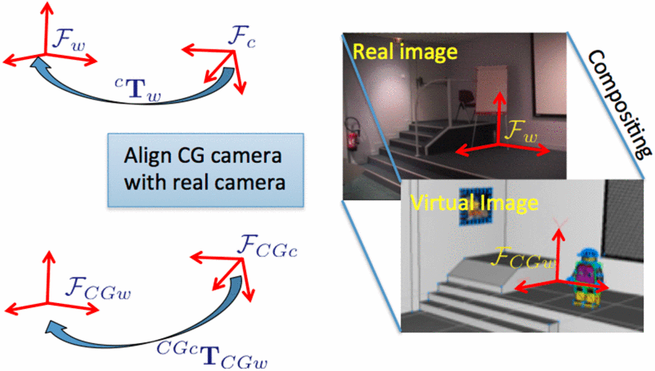
Recognition identifies features in the 2D imagery and matches them to corresponding points in a database of 3D features. Typically, the database consists of image, model, or area feature types, which are described in greater detail below. Recognition and tracking are interrelated problems, where the former is used to initialize the latter, or reinitialize it when tracking performance degrades. Tracking updates the position of recognized features over time to reduce the computational costs associated with recognition (You & Neumann, 2015).
Camera pose estimation calculates the camera’s transformation matrix based on the tracked features. It is achieved by solving the perspective-n-point (PnP) problem for 2D-3D pairs based on intrinsic camera parameters (e.g., focal length, aspect ratio, lens distortion). PnP is a fundamental computer vision problem with many modern applications. The details of PnP are beyond the scope of this work but the essence of the problem is captured in Figure 2.16. For more information, including a survey of implementations, see Marchand et al. (2016).
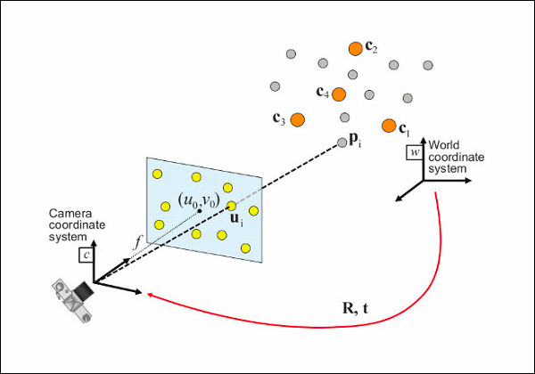
Tracking methods are typically characterized by the features used in the registration process. This is an active area of research where terminology and implementations vary, but image, model, and area feature types are common. Image based tracking relies on 2D pixel data. Model and area based methods use discrete and continuous objects of 3D geometry, respectively. Hybrid methods are also used.
Image-based methods use either photographic image data, graphic symbols called templates, or barcode-style marker designs. The feature database is created through an offline preprocess which identifies critical reference points in the image data and encodes them as vector representations. During recognition a similar process is used to encode reference points identified in the live imagery, which are then matched to the feature database using nearest neighbor methods. This process is resource intensive for arbitrary image and template data (Yang & Cheng, 2015).
Marker-based AR affords simplifying assumptions for the registration process with standard fiducial designs optimized for all stages of the tracking process. Black-and-white encoding patterns and clearly delineated boundaries aid recognition and tracking. The corners emphasized by square marker designs provide four coplanar, non-collinear points required for PnP pose detection (Yang & Cheng, 2015). DensoWave’s Quick Response (QR) codes store 2953 bytes of easily-decoded binary data and are widely used for AR applications (ISO, 2015). The marker-based process is depicted in Figure 2.17.
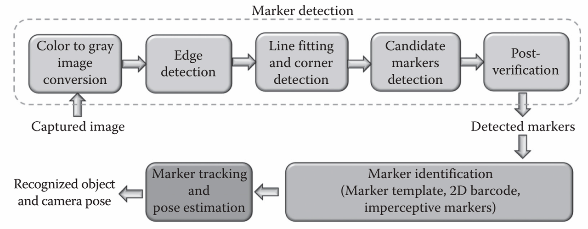
Marker-based optical tracking systems use two approaches. The “inside-out” approach places markers on the target object and camera pose is estimated from images of the marker in the observer-borne camera. In the “outside-in” case, markers are placed on the observer, who is localized by a set of static cameras surrounding the scene. The outside-in method, more commonly used in motion capture applications, requires an additional pre-calibration process that establishes the pose of the target object. Both cases require prior instrumentation of the scene with markers or cameras, the number and placement of which determines the trackable volume. This deployment process and the visually obtrusive nature of markers may be inappropriate in some applications (Gay-Bellile et al., 2015). Additionally, markers are often impractical in controlled and/or outdoor environments and are sensitive to occlusion (Ventura & Höllerer, 2015; Yang & Cheng, 2015). Together, these shortcomings compel the use of more sophisticated tracking methods.
Instead of image data, model based tracking relies on a 3D model of the target object for feature identification. The process is analogous to what is described above: key points encoded from the 3D model data are compared with features extracted from the live scene data and corresponding pairs are used for pose estimation. Live scene data can consist of imagery or 3D geometry generated from camera data using SFM (structure from motion) (Schonberger & Frahm, 2016) or SLAM (simultaneous localization and mapping) (Durrant-Whyte & Bailey, 2006) related methods (You & Neumann, 2015). Alternatively, active scanning systems using LiDAR (light detection and ranging) or TOF (time of flight) can be used to reconstruct scene geometry in real time (Behzadan et al., 2015).
The accuracy of model based tracking methods suffers when geometric or photometric details are not easily discerned. As a result, it is sensitive to lighting conditions (color, intensity, direction) and visibility (small in FOV, occluded, or outside DOF). Area based tracking uses SFM / SLAM to address those shortcomings by tracking a 3D model of the entire scene rather than discrete elements of it. This greatly increases the likelihood of achieving the confluence of 2D-3D matches required to achieve recognition (Gay-Bellile et al., 2015).
Vision based methods are often supported by incorporating additional sensor data to augment the tracking process. A complementary source of orientation and translation data can be derived from GPS data fused with signals from a trio of inertial measurement units (IMUs): accelerometer, gyroscope, and magnetometer (Ventura & Höllerer, 2015; Yang & Cheng, 2015).
Proper tracking is the essence of AR/MR devices and a critical element of pictorial consistency in both OST and VST devices. But the accurate placement of virtual objects in the real scene does not guarantee spatial coherence. Such objects must also appear naturally occluded.
2.7.5 3D Occlusion
As discussed in reference to Stereopsis and Depth Perception, occlusion occurs when objects nearer the viewer naturally obscure background objects. Real world scene depth is largely informed by our perception of this. Thus, proper occlusion of virtual objects in the real world is essential to the user’s understanding and acceptance of a mixed reality scene, as well as their interaction with it.
The graphics pipeline and depth sensors of a modern XR HMD can provide the information required to enable per-pixel masking of virtual objects for accurate depth sorting. The believability of the combined scene is dependent on the resolution, dynamic range, and opacity of the virtual object. So-called “hard-edged occlusion,” where virtual objects appear opaque and naturally occluded, with crisp edges, is the ideal. This requires blocking light from the scene at a pixel level, which is achievable on VST devices using traditional digital compositing methods (Kiyokawa, 2015).
OST devices rely on optical compositing techniques, with little control over the scene’s natural dynamic range and displays unable to match its brightness. As a result, virtual objects on OST AR/MR devices have a ghostly, semi-transparent look. This may be suitable for overlays and other augmentations, but falls short of enabling a cohesive mix of real and virtual objects. Currently, few optical methods are capable of addressing this problem. Pixel dimming is often suggested as a compromise in OST HMDs. This method, also known as soft-edge occlusion, selectively dims areas of the real world to help virtual objects stand out (Kress, 2020).
Despite significant research and development efforts, occlusion remains an unsolved problem in OST devices. Few implementations of soft-edge occlusion exist in the market, and hard-edge solutions remain entirely absent. The details of the challenges involved are beyond the scope of this work, but are well summarized by Karl Guttag, a recognized expert in graphics processors and display systems. Guttag identifies technical and physical roadblocks for both approaches and declares a general solution to hard-edge occlusion “infinitely complex” for current optical architectures (Guttag, 2021).
2.8 Ensuring Comfort
Well-designed hardware and software can exhibit the fidelity, responsiveness, interactivity, and believability necessary to promote immersion through the user’s overall sensory comfort. The previous section outlined many of the key technical considerations in doing so. In time, many of shortcomings identified will likely be overcome.
Meanwhile, comfort related considerations must help guide the necessary tradeoffs. For the effects of immersion to take hold, the experience must limit distractions due to wearable, social, vestibular, or visual discomfort.
2.8.1 Wearable Comfort
Wearable comfort refers to general ergonomic traits, including size, weight, and balance, as well as surface treatments and thermal management features. Overall usability and safety are also factors. For example, the safety and mobility benefits offered by a direct view of the environment and cable-free use motivated the HoloLens’ untethered OST design (Kress & Cummings, 2017).
2.8.3 Vestibular Comfort
Due to the interrelated nature of the human visual and vestibular senses, it is difficult to clearly separate the relevant comfort issues. Here, vestibular comfort is primarily concerned with motion sickness. However induced, motion sickness is XR’s most common and significant adverse health effect. In VR and VST AR devices the primary contributors are movement and visual effects.
The most widely accepted explanation for sickness caused by real or apparent motion attributes it to a mismatch of sensory inputs. In XR, visual and auditory stimuli are experienced through the HMD while the vestibular and proprioceptive signals are coming from body motion. When discrepancies occur, motion sickness can follow. Sensory mismatch in XR is commonly caused by latency or unnatural motion. When MTP latency is excessive, the perception of body motion and corresponding visual stimuli are not synchronized, leading to visual-vestibular mismatch. Unnatural motion is often implemented with the intention of improving the experience. For example, head bobbing or strafing motions commonly used to add dramatic or interactive effect in screen-based experiences can have unintended effects in XR. The negative health effects of latency partly motivated the push for high frame rates and sensor fusion optimizations common today. Intended unnatural motion is a content design issue easily addressed through best practices (Jerald, 2016).
Visually induced motion sickness (VIMS) is “a subcategory of motion sickness that specifically relates to nausea, oculomotor strain, and disorientation from the perception of motion while remaining still”(UL, 2022). Several characteristics of VR and VST AR HMD design directly contribute to VIMS, including optical design issues, the presence of motion artifacts, and tracking / sensor fusion issues, all of which contribute to scene instability.
Elevated levels of vergence-accommodation conflict (VAC) are known to cause discomfort and nausea in OST AR devices. Our visual reflexes naturally work together to look at (vergence) and focus on (accommodation) objects in the FOV. But most modern AR/MR devices use fixed focal length displays in which all virtual objects appear in focus at the same distance from the eye point, typically 2m. Virtual objects that occur at any other depth in the scene will lead to conflicting signals from the eyes’ vergence and accommodation demands. When that occurs, depth and focus cannot be reconciled, leading to eye strain and disorientation (Kiyokawa, 2015). For example, mixed reality experiences that rely on arm’s length interactions are focused on an area 30-70 cm from the user. This is well within the headset’s fixed 2m focus, and often leads to VAC-induced discomfort (Kress, 2020). Extended VAC exposure can lead to visual adaption, temporarily decoupling vergence and accommodation. The reduction of depth perception that results can create a hazardous situation. As such, UL 8400 recommends that users avoid sensorimotor-demanding activities (e.g., taking the stairs, driving, bike riding) for 30 minutes after each session (UL, 2022).
2.8.4 Visual Comfort
The primary visual comfort related considerations are vision correction, eye box design, and the limits and parasitic effects of screen-based display technology.
HMD designers cannot ignore the fact that a large portion of the population have some form of vision impairment, yet the method and degree of corrective support varies. Depending on the device type and form factor, interchangeable lenses, adjustable focal length, or custom corrective lenses may be integrated. Correction is particularly important in OST HMDs, and many are designed to accommodate the wearer’s prescription glasses. This has an impact on the eye box design.
Ideal optical system designs provide a clear, consistent, and unobstructed view of the entire FOV. A key contributor to that outcome is the size of the eye box: the volume of “3D space in which the viewer’s pupil can be positioned to see the entire FOV” without a reduction in brightness or distortion near the extents (Kress, 2020). Eye box designs vary with user anthropometry (inter pupillary and temple to eye distances), system design (combiner thickness, optical architecture, and eye relief), and pupil size. Though mechanical adjustments may allow users to optimize a system’s eye box for their static anthropometry, scene visibility will still vary with their pupil size. For example, the edges of the display may become blurry when the pupil dilates in bright conditions. The complexity of eye box design and ambiguities of the “easy viewing” requirement make this a challenging problem (Kress et al., 2014). Large eye box designs can improve visual and wearable comfort (fit), but at a cost to perceived brightness (luminance) due to physics based constraints (étendue).
Current hardware continues the trend of exploiting the latest advances in components designed for the screen-based smartphone and tablet markets, sometimes with little effect. In particular, flat panel display technologies used as immersive near to eye (NTE) displays are inherently limited by fixed focus, low brightness / contrast, and optical invariants including étendue. These pixel-based displays are also susceptible to a variety of parasitic effects. The screen-door effect appears when the optical quality, typically expressed in terms of MTF,15 is high enough to see gaps between the pixels of the display device. Aliasing is the visible side-effect of representing continuous visual phenomena with discrete pixels. Where aliasing is the spatial artifact of sampling, motion blur is its temporal side effect. The Mura effect describes an unevenness of the display caused by imperfect illumination or screen geometry. Each of these effects can be mitigated with hardware and/or software methods (Kress, 2020).
2.9 Design Tradeoffs
Due to directly conflicting requirements common in XR systems, there is no “one size fits all” solution. Amidst the hype surrounding this promising but immature technology, it is important to have an accurate understanding and realistic expectations. Numerous considerations important to the design, selection, and implementation of XR solutions are detailed above. Figure 2.18 assesses the importance of selected optical requirements in HMD devices across common market segments.
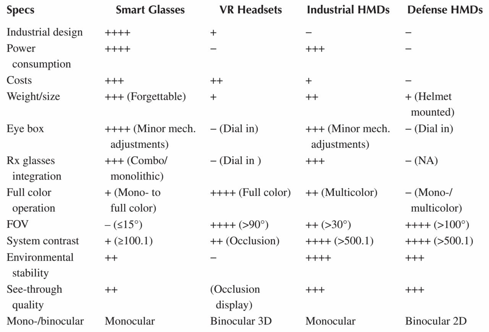
Tradeoffs should be informed by requirements specific to the context, manner, and goals of intended use, prioritizing human factors related to perception. Aligning the desired outcomes with the primary affordance of the chosen device is essential. These choices are aided by an understanding the theoretical underpinnings of those affordances.
2.10 AR/MR Potential for Industrial Training Applications
While XR has yet to provide consumers with a value proposition that is broadly compelling and sustainable,16 the industrial, healthcare, and military markets have embraced its potential for cost savings and competitive advantage.
Across industry, preliminary studies have shown that AR’s essential connection to reality (e.g., guiding a surgeon’s hand) can have a variety of benefits. AR has improved learning rates, reduced errors, increased yields, improved quality, and enhanced designs. By enabling collaborative design, remote expert guidance, and enhanced monitoring, it has also improved the end-user experience (Azuma, 2019). In industrial settings HMDs are typically designed to support operators in an unobtrusive fashion, allowing them to focus on a task in the physical world, e.g., inspection, maintenance, repair, and order picking. In doing so they can reduce cognitive and/or physical load thru supplemental hands-free displays (Starner, 2015). Manufacturing, healthcare, and defense are three industries that have invested heavily in the early development of this technology.
2.10.1 Applications in Manufacturing
In manufacturing, supporting operators and repair technicians with digital work instructions has been a common application of AR research and development since the early 1990s (Azuma & Bishop, 1994). AR is a core component of I4.0 that allows intuitive, real-time access to contextually appropriate information. It provides the ideal visual interface for collaborative problem solving as described in Grieves’ original vision for digital twins (Grieves, 2015). Due to the many benefits described above, a 2020 study documented applications in operations, maintenance, quality control, safety management, design, visualization, logistics, and marketing (Oztemel & Gursev, 2020). XR shows particular promise as a source of innovative tools and technologies for training workers at a time when finding skilled labor is increasingly difficult due to high retirement rates, global expansion, and increasing specialization (Kress, 2020).
A compelling case study for the use of AR in manufacturing comes from the automotive sector, where its benefits can be leveraged across the entire product life cycle (Gay-Bellile et al., 2015). During design it reduces the need for and cost of physical mock-ups. AR complements the traditional design process, enhancing physical prototypes with virtual elements that can be accurately evaluated in real-world context. Prior to production, AR can reduce the impact and cost of factory planning. Operators can evaluate simulated workspace changes virtually integrated into the real environment without disturbing production or requiring a complete and accurate 3D model of the existing environment. During production AR can benefit tasks related to assembly, picking, and quality control by delivering instructions naturally, in the ideal context (what, when, where, how needed). AR allows the operator to remain focused on the work area while augmenting their perception with relevant data from sensors and/or information systems. Sales efforts benefit from AR’s ability to communicate aspects of the vehicle that are not otherwise observable, (e.g., performance characteristics), or demonstrate unaccessible features (e.g., options for models not in inventory). Unlike other methods, the AR based approach retains accurate perception of dimensions, volumes, and other cues that are subtle but important to human perception. During the operation phase, AR can enhance the driver experience in many ways by visualizing system characteristics, highlighting potential dangers, aiding perception in degraded conditions, and augmenting instructional materials and support services.
2.10.2 Applications in Healthcare
In healthcare, XR has therapeutic and educational applications ranging from pain management and the diagnosis of mental disorders to medical decision-making and surgical support (Aqlan & Hui, 2020). AR in various forms has been adopted by the medical industry to improve patient / procedure outcomes and safety while reducing radiation exposure, recovery time, and costs. It is a well-suited complement to the trend towards minimally invasive procedures, where access and vision are limited (Yaniv & Linte, 2015). In those cases, AR eliminates the need for surgeons to map preoperative data to the patient from an adjacent monitor. It allows direct cognition of the operator’s movements relative to patient anatomy. This form of image-guided surgery is achieved by tracking the surgical instruments and visualizing them over preoperative data registered to the patient. The challenge, time, and error of these procedures are less than screen-based alternatives that require filtered cognition (Kersten-Oertel et al., 2015). Medical necessity will likely drive the adoption of wearable devices that include AR functionality. Conditions like diabetes and macular degeneration can be monitored and/or improved with such devices. Eye worn sensors are being developed to address both of these medical necessities by improving the user’s perception (Barfield, 2015).
2.10.3 Applications in Defense
In the military market, where many of these technologies were first proven, there remains a strong and growing demand for custom XR hardware solutions. In addition to the traditional HMD / Heads-Up-Display (HUD) systems common in fixed and rotary wing aircraft, there are efforts underway to outfit service members with AR devices that support their mission (Kress, 2020). The US Army’s IVAS (Integrated Visual Augmentation System) is the most ambitious current example. Originally awarded in March of 2021, IVAS is a $22b partnership with Microsoft to improve “Soldier sensing, decision making, target acquisition, and target engagement” (PEO Soldier PM IVAS, n.d.). While these custom hardware solutions provide further evidence of XR’s adoption and future, educational applications for XR in the military are more relevant to this work. The wide range of applications include training and briefing support for pilots (Alexander et al., 2019), maintainers, leaders (Clayton & Straub, 2020), and officers (Millican, 2017).
2.10.4 Key Benefits for Industrial Training
The reviewed literature underscores the significant potential of AR/MR technologies in industrial training applications, particularly in manufacturing, healthcare, and defense sectors. Despite the gradual pace of consumer adoption, these industries recognize the potential advantages of leveraging AR/MR to enhance operations, reduce costs, and improve workforce development.
The key benefits of AR/MR in industrial training contexts stem from its ability to provide contextually relevant, spatially registered information and instructions integrated with the real-world environment. This promises to enhance learning, reduce errors, improve task performance, and ultimately contribute to a more skilled and efficient workforce.
2.11 Theoretical Basis
Before we proceed, it is essential to differentiate AR and MR from VR and establish the theoretical basis of their advantages for learning and retention.
2.11.1 Differentiating AR from VR
As we saw in Section 2.5, the XR devices lie along a continuum of user experience. For the purposes of this discussion, we will consider MR a subset of AR, with the added ability to manipulate virtual objects within the real-world scene.
AR and VR devices are often confused with one another and/or mistaken as new means for the consumption of traditional content. Both are head-mounted devices that display believable sensory stimuli to augment or reproduce real-world interactions. Both do so in a manner that is contextually cohesive and responsive to a wide range of body-centered inputs. Despite their commonalities, AR and VR are fundamentally different from one another and other modern media. Where VR is designed to immerse the user in a synthetic world, AR is intended to strengthen the user’s connections with reality. Failing to recognize and leverage their unique affordances severely limits the utility of these devices (Leonard & Fitzgerald, 2018).
VR provides a form of interactive sensorimotor simulation that, when immersive enough to enable presence, the brain interprets as a lived experience. This enables situated learning experiences which, if designed to be appropriately challenging and/or visceral, can be enhanced by flow and may elicit an emotional response (Kappes & Morewedge, 2016; Kwon, 2018; Millican, 2017). The learning effect of a VR experience is thus largely grounded in the theoretical requirements and benefits of immersion & presence, experiential learning, and flow theory.
As an active learning method17, VR is best suited for the development of higher-order cognitive skills. The potential for emotional impact also makes VR a useful tool for affective learning. Because the experiences are simulated, VR enables training that is otherwise impractical or impossible. Finally, the digital nature of VR experiences makes them easy to repeat, instrument, scale, and distribute. These practical benefits are accurately summarized as offering “experience on demand” in Jeremy Bailenson’s18 popular book of the same name (Bailenson, 2018).
AR allows augmentation of the real world with virtual objects that are informative and/or interactive, thus enhancing our understanding of and connection with the world. The essential affordance of AR is direct interaction with virtual objects in which visual and spatial queries take the form of natural object manipulation in everyday surroundings. Applying embodied cognition and animate vision theories in the context of learning suggests that, by retaining proprioception and sensorimotor function, AR experiences are more aligned with human cognitive architecture than metaphorical digital interfaces. AR interfaces provide a combination of procedural and configurational spatial knowledge via haptic and pictorial sources. Visual, spatial, and sensorimotor feedback provides multiple reference frames that enhance perception and cognition. By reducing the overall cognitive load or better distributing it across multiple sensory pathways, AR improves the uptake of sensorial-based knowledge (Shelton & Hedley, 2003).
AR is also an active learning method best suited for higher-order cognitive development. Its affordances are well-suited for task-related learning because of the inherent connections between visual perceptual activity and physical movement. These effects are enhanced by untethered, hands-free OST HMDs which improve mobility and enable unencumbered use. AR facilitates local collaboration and remote assistance. Where VR excels at delivering discrete packages of simulated experience, AR is best applied to the continuous enhancement of action in the real world (Leonard & Fitzgerald, 2018).
Neither AR nor VR have proved more effective than traditional classroom methods for the recall-oriented learning outcomes found low in Bloom’s cognitive domain, including remembering, understanding, or applying. However, both demonstrated other benefits in line with theory. VR users perform better on high-order questions related to analyzing, evaluating, and creating. It is also known to improve student attitudes, including engagement and self-efficacy (Cook et al., 2019; Kwon, 2018). AR users demonstrate improved perception, performance, and understanding of spatial concepts, with student outcomes correlated to physical engagement with the content. The psychological benefits of AR include reduced test anxiety and increased self-efficacy (Chen et al., 2019; Shelton & Hedley, 2003). These benefits have broad industrial and military applications.
2.11.2 Theories of Learning and Cognition
The perceptual, cognitive, and learning benefits of XR devices are generally attributed to theories rooted in experiential and constructivist learning, as well as related cognitive theories, all integral to the concept of active learning. These theories collectively emphasize the importance of direct experience, active engagement, and integrating all human faculties in the learning process. By applying these principles, XR devices are posited to optimize learning outcomes, assuming other factors are conducive. The following section will delve deeper into these theoretical frameworks, explaining their relevance and application in the context of XR-enhanced learning.
2.11.2.1 Active Learning Theories
Active learning theories (ALT), particularly constructivism and experiential learning theory (ELT), describe the relationship between situated experiences and educational outcomes, where the self-directed construction of new knowledge occurs through activity in a supportive environment (Clayton, 2017). Fundamentally, these ideas have epistemological origins in empiricism, rationalism, and pragmatism, which consider the role of experience, reason, and action in knowledge.
The idea of learning by doing is ancient, but the origins of modern ELT are usually attributed to John Dewey and his 1938 work, Experience and Education (Dewey, 1938). Jean Piaget’s theory of cognitive development later introduced the idea of constructivist learning theory (CONLT), wherein learners build new understanding through the interaction of prior knowledge and experience (Piaget, 1928). Russian psychologist Lev Vygotskii’s “Zone of Proximal Development” (ZPD) emphasized the learner’s need for knowledgeable support, along with the social aspects of constructivist learning (Vygotskiı̆ & Kozulin, 1986). These ideas were expanded on by Jerome Bruner’s theory of “instructional scaffolding.” Bruner claimed that understanding is developed through carefully guided and supported learner experiences that build on their current knowledge (Bruner, 1960).
In 1984 David A. Kolb, a protégé of Bruner’s, published his cycle of experiential learning, which identified four stages: concrete experience, reflective evaluation, abstract conceptualization, and adaptive experimentation (Kolb, 1984). Kolb’s conceptual model incorporated elements from previous theories and is widely used to operationalize ELT concepts today. Later, Lave and Wegner’s Situated Learning Theory emphasized the contextual aspects of ELT. They claimed that an environment relevant to the subject matter helped situate the learner’s mind, strengthening the experience and thus the learning effect (Lave & Wenger, 1991).
Active learning theories are grounded in andragogy and its methods, as espoused by Malcolm Knowles (Knowles, 1970). Where andragogy emphasizes the self-directed methods described above, pedagogy is primarily concerned with the delivery of knowledge and skills by an instructor. Modern educational systems are commonly designed to maximize the uptake of content knowledge using the later approach (Leonard & Fitzgerald, 2018). Pedagogy is well suited to the developmental and intellectual needs of young learners focused on the cognitive domain of Bloom’s Taxonomy of Educational Objectives (Bloom, 1956). The objectives in this domain, as revised in 2001, are: remember, understand, apply, analyze, evaluate, and create. The extended taxonomy also describes the domain of affective (emotional) development (Simpson, 1966). Where pedagogy excels at delivering content knowledge, andragogical methods better support “higher order” cognitive and affective learning. For example, andragogy is commonly employed in the development of 21st Century Skills, including critical thinking, innovation, collaboration, and problem solving (Millican, 2017).
2.11.2.2 Flow Theory
Focused activity can lead to a state of psychological absorption. This intuitive phenomena is known as ‘flow,’ a term coined by Mihály Csikszentmihályi19 who described it as the “optimal experience” (Csikszentmihalyi, 1990). Flow is a cognitive and affective state in which individual attention and motivation feel in harmony with the situation. This leads to a period of absorbed productivity wherein the normal concern for our immediate needs abates. Most of us recognize this highly gratifying experience, which is colloquially known as being in the zone or groove. Many previous studies have established flow’s positive influence on learning effects (Kwon, 2018).
Csikszentmihályi’s work claims that activities leading to flow must have structure and direction, provide clear and immediate feedback, and balance perceived challenges and skills. These interrelated requirements enhance the sense of competence and self-efficacy, in a way that is highly engaging without creating anxiety (Csikszentmihalyi et al., 2014). The so-called “flow channel,” in which challenge and skill are appropriately balanced for the individual, is similar in concept to Vygotskii’s ZPD, as previously described.
2.11.2.3 Cognitive Load Theory
Cognitive Load Theory (COGLT) is a framework for instructional design that aims to optimize learning by managing the cognitive load placed on learners. It is based on the assumption of a limited working memory and an unlimited long-term memory (Sweller et al., 1998). COGLT suggests that effective instructional material should direct cognitive resources towards relevant learning activities (Chandler & Sweller, 1991). It identifies three types of cognitive load: intrinsic, extraneous, and germane. Intrinsic cognitive load is determined by the nature of the material, while extraneous cognitive load is caused by poorly designed instructional materials (Sweller, 1994). Germane cognitive load, on the other hand, is the cognitive load that contributes to learning by promoting the construction and automation of schemas20.
Like Flow Theory and the ZPD concept, COGLT can inform both active learning theories and pedagogical practices to optimize learning experiences. The former both deal with aligning the challenge level of learning activities with the learner’s abilities to promote engagement and learning. Meanwhile, COGLT deals more directly with how the presentation of information affects memory and learning processes. Together, these theories provide a comprehensive framework for designing effective and engaging learning experiences.
2.11.2.4 Embodied Cognition
Theories related to embodied cognition (EC) are concerned with the role of mind-body relationship in cognitive processes, and how those processes are influenced by interaction with the environment. EC makes diverse claims, some of which are controversial. Fundamentally, it asserts that cognition and sensorimotor processing are deeply intertwined. “On-line” cognition, which occurs in the context of the real world, involves perception. In that case, the purpose of the mind is to guide responses in real-time, and interactive experimentation with the environment is often used to aid cognition. But much of human cognitive activity occurs “off-line,” separate from the environment (e.g., planning, analysis). In those times, cognitive processes are often informed by simulations of sensorimotor activity, including mental imagery, spatially-oriented mental models, and procedural memory. Thus, EC ultimately claims that perceptual and motor systems are not merely peripheral input and output services; they are essential components of an integrated mind-body process which is highly reliant on real or simulated interaction with the world (Wilson, 2002).
Mental practice is an instructive example of off-line cognition, defined as mentally rehearsing or “visualizing” a motor task in the absence of physical movement. These sensorimotor simulations typically entail detailed mental representations of a specific real or hypothetical event. Compared to the corresponding physical experiences, they are shown to engage similar neural and conceptual systems and have corresponding effects on perception, cognition, motivation, and action. This form of mental simulation is known to be effective in a range of cognitive and physical skill-based tasks, including golf putting, rock climbing, piano playing, and surgery. The effects of mental practice appear to come from improved connections between action planning, movement, and proprioception, demonstrating that the brain responds similarly to imagined and real experiences (Kappes & Morewedge, 2016).
2.11.2.5 Spatial Cognition Theory
EC is related to spatial cognition theory (SCT), which describes the forms and sources of spatial concepts. Spatial knowledge, it claims, comes in three forms: procedural, declarative, and configurational. Procedural knowledge relates to navigating spaces or things. Simple facts about a space and the entities therein are the basis of declarative knowledge. Configurational knowledge concerns the relative positions and orientations between spatial entities, as well as their relationships. Likewise, three sources of spatial knowledge have been identified: haptic, pictorial, and transperceptual. Haptic knowledge is formed by touch or body movement. Visual information is the source of pictorial knowledge. Transperceptual knowledge is synthesized over time from multiple sources (Shelton & Hedley, 2003).
2.11.2.6 Animate Vision Theory
Though our language of human vision shares terms and ideas with cameras and photographs, the relationship is only analogous. A photo may resemble the mental image of what we perceive, but it is a shallow, incomplete representation of the experience (Greenwold, 2003). The operation of human vision is less like a camera than it is a computational imaging system with multiple sensory inputs and a brain-based CPU.
Animate vision theory (AVT) proposes that “vision is not the transformation of light signals into a representation of the enveloping 3D world, but … a tool used for sensory exploration of the environment,” in which humans “sample a scene from the world in ways suited to their immediate needs” (Shelton & Hedley, 2003). Human vision involves physical and visually-related behaviors that iteratively construct a cognitive map of the environment. With each cycle, those mental representations guide movements and actions that redirect perception. New information acquired in each iteration is used to refine the cognitive map. In this visuo-motor model, motor movement is essential to vision as it provides valuable information about the relative location of objects in the environment and the movement of the perceiver in relation to them (Clark, 1997).
2.11.3 Implicitions to Instructional Design for Augmented Training
This review emphasizes the importance of differentiating AR from VR when considering their application in learning and training contexts, particularly in manufacturing settings. While VR excels at delivering self-contained, emotionally engaging simulations, its fully immersive nature disconnects users from the real world, making it less suitable for supporting manufacturing operators who need to interact with physical tools, machines, and workpieces.
In contrast, AR’s ability to enhance the user’s connection with the real world aligns well with the demands of manufacturing tasks. These claims are supported by well-established theories of experiential and constructivist learning, including embodied, spatial, and visual cognition. By preserving the user’s connection to the real world and leveraging natural perception-action couplings, AR is believed to align more closely with human cognitive architecture in ways that may enhance the acquisition of spatial and procedural knowledge. These affordances make AR particularly well-suited for enhancing real-world task performance and skill acquisition in manufacturing contexts, where operators need to navigate complex spatial arrangements, manipulate physical objects, and execute precise procedures.
Cognitive load theory and flow theory offer additional insights about balancing cognitive load and the level of challenge to enhance engagement and motivation. Ultimately, the practical and theoretical implications of these theories must be carefully considered during the instructional design of AR/MR-based training in order to meet the specific learning objectives and demands of the manufacturing industry.
Together, these theories inform a cohesive approach to instructional design for augmented training methods. As depicted in Figure 2.19, instructional design should be based on Active Learning Theories and informed by Cognitive Load Theory, while applying Educational Best Practices. Active learning theories are comprised of experiential and constructivist components, along with related theories of cognition, embodiment, and flow.
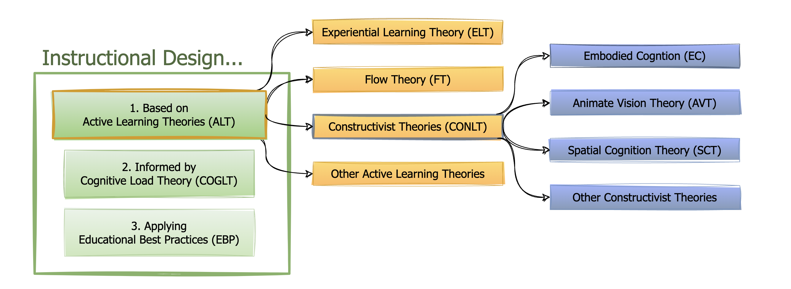
2.12 Barriers to Adoption in Manufacturing
XR, particularly AR/MR, is still relatively immature. Despite promising results from pilot studies, widespread industry adoption of AR/MR for training requires clear justification in terms of return on investment (ROI) and measurable improvements in training outcomes. A number of other important technical, market, and social / legal obstacles must also be overcome (Azuma, 2019).
Doolani et al. (2020) conducted a comprehensive review of the current state-of-the-art in the use of XR technologies for manufacturing training. The review included 52 peer-reviewed articles published between 2001 and 2020, covering applications of VR, AR, and MR in various manufacturing training domains, such as maintenance, assembly, and human-robot collaboration. The authors found that XR technologies are effective in improving performance, reducing errors, and increasing engagement compared to traditional training methods. They also identified key benefits of using XR in manufacturing training, including enhanced safety, cost-efficiency, and scalability. However, the review highlights current barriers to XR adoption, such as hardware limitations and the need for further research on the application of AR in later phases of the manufacturing process. The authors conclude that XR technologies are powerful tools for manufacturing training, with each technology having unique capabilities and applications. They emphasize the need for future research to focus on developing interactive training interfaces and addressing the limitations of current XR systems to facilitate wider adoption in the manufacturing industry.
2.12.1 Measurable Improvement of Outcomes
In this section, we specifically focus on quantitative studies that evaluate the effectiveness of AR in enhancing instructional techniques. Our inclusion criteria are centered on case studies that require participants to learn and apply new cognitive and/or physical skills in practical, hands-on tasks within a manufacturing context. Such studies must also involve AR technologies that enable hands-free interaction. From an initial pool of 44 generally relevant studies, only 10 were found to align with these stringent criteria.
Upon closer review, two cases were later found less relevant than originally understood. Gonzalez-Franco et al. (2017) primarily assessed knowledge retention through fact-based quizzes, and not the acquisition of practical assembly skills. Wang et al. (2021) was designed to compare different instructional designs using the same AR device. Those studies were retained in the literature review but excluded from further consideration in the interpretations and conclusions that followed.
Tang et al. (2003) explores the comparative effectiveness of AR versus traditional and other computer-assisted instructional media in an assembly task utilizing LEGO Duplo blocks. In a carefully designed between-groups experiment involving 75 undergraduate students with no previous AR experience, participants performed an assembly task under one of four instructional conditions: traditional printed manual, computer-assisted instruction (CAI) on an LCD monitor and see-through HMD, and spatially registered AR instructions through an HMD. The assembly task, involving 56 procedural steps, was chosen for its generalizability to a wide range of assembly tasks across sectors. Key performance metrics included task completion time, error rate, and perceived mental workload, measured by the TLX. The authors discovered that spatially registered AR instruction significantly reduced assembly errors and decreased participants’ mental effort compared to other media, highlighting AR’s potential to offload cognitive processing. However, while AR outperformed the printed manual in completion time, it did not significantly outpace the other CAI conditions. The study underscores the risk of attention tunneling in AR, where users might become overly-reliant on its cues and become less aware of their physical surroundings. The authors suggest that AR systems should be carefully designed to balance those inputs.
Gonzalez-Franco et al. (2017) examines the effectiveness of MR against traditional training in manufacturing. As seen in Figure 2.20, the study uniquely employed an OST HMD setup to facilitate a face-to-face training where participants and instructors collaborated using a virtual model of an aircraft maintenance door. Twenty-four employees of the institution, without prior manufacturing knowledge, were recruited for this between-groups study. Knowledge retention tests and practical application assessments were used to determine the effectiveness and knowledge transfer. Analysis unexpectedly revealed that no significant differences were found in knowledge retention and interpretation scores between the MR and traditional methods. Task times did increase for MR training, attributed to the complexity of and user inexperience with HMDMR. The research highlights a unique capability of MR as equivalent training tool that can support, not replace some forms of face-to-face training in the future.
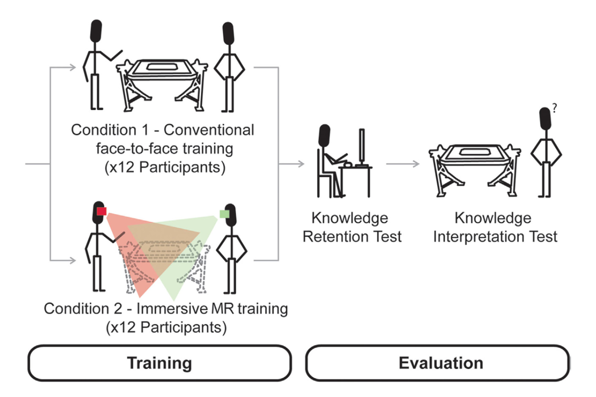
Chu et al. (2020) investigates the comparative effectiveness of instructional methods for assembling models of traditional Chinese architecture. The between-groups study recruited 48 engineering students to compare traditional paper instructions with a 3D viewer and an AR-assisted system. Each treatment was designed to include a progression of instructional affordances, as seen in Figure 2.21, based on validated paper-based instructions. Despite this, paper methods were associated with the most part-fetching errors, suggesting they lacked the necessary clarity. The AR system showed a trend towards reducing assembly errors and improved the accuracy of component placement, albeit at the expense of longer assembly times. Participants indicated a preference for the interactive features of AR, but a comparison of TLX responses showed no significant difference in perceived workload. The authors conclude that while AR has the potential to support complex manual assembly, the longer assembly times suggest areas for improvement in AR-assisted systems, such as reducing part confirmation time and addressing user fatigue. They also emphasize the importance of well-designed instructional content and user interaction methods in AR-assisted assembly systems, as these factors can significantly impact assembly performance and user experience.
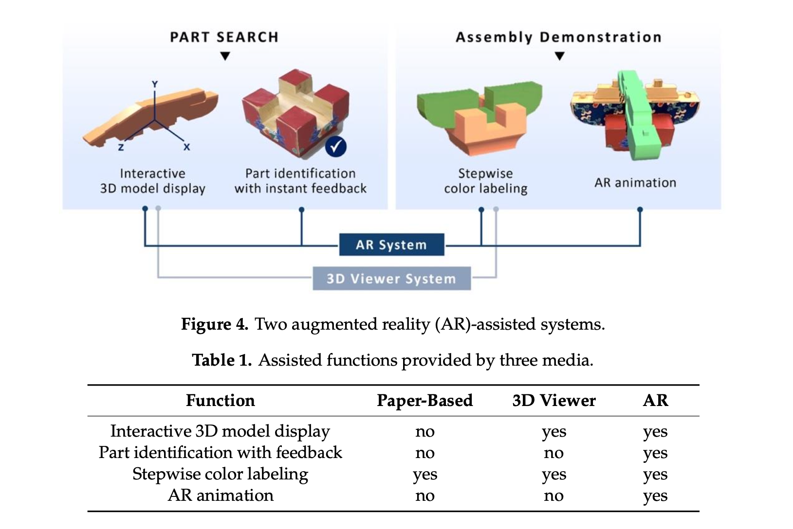
Büttner et al. (2020) investigates the efficacy of projection-based AR systems compared to personalized training and paper manuals for industrial assembly work training. The between-groups study simulated assembly tasks using a Fischertechnik construction kit. Training cycles, training time, error rates after 24 hours and 1 week, and quiz scores were tracked across 24 participants without prior AR experience. Personalized training outpaced both projection-based AR and traditional paper manuals in immediate learning efficiency. While AR systems somewhat improved training efficiency by preventing systematic mislearning through immediate feedback, they did not significantly outperform other methods in terms of training speed or long-term recall precision. The approach emphasized impact on the learning process–—training efficiency (rate of skill acquisition) and sustainability (recall and retention)—–over immediate task performance metrics like error rates and task completion time. The authors conclude that while projection-based AR can prevent mislearning, it does not offer significant benefits over paper manuals. They suggest exploring ways to incorporate aspects of personalized, adaptive training into AR systems to potentially improve training efficiency.
Hoover et al. (2020) examines the efficacy of using a first generation Microsoft HoloLens (HL1) for delivering AR guided assembly instructions against traditional and tablet-based digital instructions. Data for desktop and tablet model-based instructions, along with tablet AR conditions were drawn from prior studies. Participants in this between-groups study completed a mock aircraft wing assembly task in 46 steps. This task, created in partnership with the Boeing Company, was designed to reflect the complexity and variety of operations required in aircraft construction. The study found that HL1 AR instructions significantly improved task completion efficiency and accuracy, though floor effects make those accuracy findings less definitive. While outperforming non-AR instructions, HL1 AR led to significantly fewer errors than desktop MBI and tablet MBI but not tablet AR. User satisfaction measured by Net Promoter Score was lower for HL1 AR than tablet AR, attributed to comfort issues like the device being heavy and 3D tracking problems identified in qualitative feedback. The authors recommend using HL1 AR for complex assemblies with minor changes like toggling instructions on/off, and employing SUS for more rigorous user experience evaluation.
Vanneste et al. (2020) examines the comparative efficiency of projected AR, oral, and paper instructions in enhancing assembly operations, particularly for workers with cognitive or motor disabilities. In this within-groups study, various outcomes were measured, including productivity, quality, and help-seeking behavior. Stress was professionally observed and a modified version of the TLX was administered post-hoc. The findings reveal that AR instructions, specifically projection-based ones, significantly improved task quality by reducing error rates and aided operators in achieving better task comprehension and independence, as evident from reduced help-seeking behavior compared to oral instructions. However, AR did not outperform other media in terms of productivity or physical effort. The authors conclude that while AR has the potential to provide cognitive support by reducing perceived complexity and stress for novice learners, these advantages seem to diminish with repeated attempts as operators gain experience.
Havard et al. (2021) assesses the impact of AR against traditional PDF instructions on performing complex maintenance tasks within industrial settings, focusing on task complexity and operator competency. The authors claim novelty in their approach of separating out and measuring consultation duration as distinct from physical execution duration. In this between-groups study involving a 27-step drilling module maintenance task, measures like maintenance duration, consultation times, error rates, and satisfaction (TLX, SUS, feedback) were evaluated. The study found no significant differences in total maintenance duration between AR and PDF tablets for either competency group, regardless of if AR search time was included. Like other studies, it found that AR users were less prone to skip steps due to the direct feedback provided. However, AR was found to provide particular benefits over PDF for operation steps involving parts that are small, hidden or hard to locate, or easily confused, and steps requiring coordinated gestures. The study shows that AR acquisition and tracking delays account for a 34% increase in consultation times compared to PDF instructions, but the mean number of consultations was lower. The same delays impacted performance, especially for less experienced operators who faced greater usability issues and gave lower SUS ratings for AR, despite an overall “good” score. It did not find significant differences in mental workload between AR and PDF for either competency group. The authors conclude that, if tracking delays are overcome, AR exhibits promise for facilitating complex industrial tasks. In particular, they find it is well suited for frequently repeated or complex operations (due to accumulated consultation savings) and situations involving high operator turnover. This is especially true when the benefits previously enumerated can be leveraged, and operator competency is considering during deployment.
Kolla et al. (2021) explore the efficiency of AR against paper-based instructions. Participants in this study constructed a planetary gearbox using a variety of operations representative of a real manufacturing scenario. Both AR methods—HoloLens and a mobile device—notably reduced errors and improved system usability over traditional paper instructions, albeit without significantly affecting task completion times or workload. The authors underscore the critical role of thoughtful application design in AR’s efficacy, highlighting how leveraging benefits like spatial mapping and speech recognition, while addressing limitations like occlusion and collision, contribute to smoother user interfaces and more positive task outcomes. The study’s within-groups design with counterbalancing helps control for individual differences and learning effects. Participant responses to TLX and SUS surveys further confirmed the superior user experience offered by AR instructions. However, the authors suggest that further research with a larger sample size is needed to investigate task completion time and workload more conclusively. They recommend future work to validate AR’s effectiveness in real assembly or training tasks within enterprises.
Wang et al. (2021) investigated the effectiveness of user-centered AR instruction in improving assembly performance and reducing cognitive workload compared to traditional 2D paper-based instruction. The study recruited 30 participants with an engineering background but no prior AR experience. Each were given the task of locating the centroid of a triangle, which they completed for both treatments. The crossover design of this study counterbalanced the order of conditions to help control for learning effect. As seen in Figure 2.22, AR instructions were delivered through a projected display system, while a HL2 was used to collect eye-tracking data. Assembly time, error rates, and NASA-TLX scores were also measured. Results showed significantly faster completion times, fewer errors, and lower cognitive workload for the AR condition. The authors conclude that augmented instruction, when designed to meet users’ cognitive needs, enhances spatial understanding and task performance for novices.
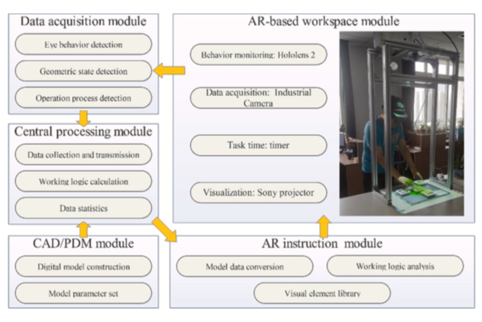
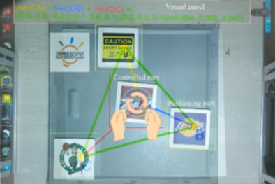
Alves et al. (2022) investigate the efficacy of three AR methods—Mobile, Indirect, and Optical See-Through HMD—in supporting assembly tasks. Specifically, this study aims to address the lack of research using equivalent task designs to compare multiple AR methods and their relative advantages. The crossbalanced, within-groups study recruited 30 participants from the university community, each with varying exposure to AR assembly support. Participants were asked to prioritize accuracy and speed while constructed an 18-step LEGO Duplo assembly. Uniquely, they were given the choice to to either superimpose the virtual assembly or view it adjacent to the workpiece. Mobile AR was associated with significantly higher task completion times than both Indirect AR and HMD AR, while no significant difference was found between the latter two. Indirect AR, often overlooked, led to significantly fewer location errors compared to the other methods, and along with Mobile AR, was more prone to shape errors than HMD AR. Notably, the analysis focused heavily on workload evaluation, with Indirect AR demonstrating significantly lower mental and physical demand as measured by “raw” (unweighted) TLX scores. The study also found a significant difference in the error types most common to each treatment and a tendency of participants not to leverage beneficial affordances. The authors conclude that while all three methods were adequate, factors like price, comfort, usability, and control would determine the best fit for the application, highlighting the need to understand their relative advantages for the task and outcomes of interest. Specifically, they identify monitor-based Indirect AR implementations as a very promising yet relatively unexplored option. Finally, despite stipulating that “Spatial AR” has been found to provide the best overall results, a lack of capable equipment prevented its inclusion in this study.
2.12.1.1 Summary of Study Results
The results of these studies are summarized in Table 2.1, including columns for Sample Size (SS) and AR/MR treatment type (AR), along with the primary results: Time, Errors (Err), Workload (Work), and Usability (Use). Where a study included more than one AR/MR treatment type, the one that best leverages the available affordances is listed. Cells for each of the four primary results denote the nature and significance of measured differences between the identified intervention and control (paper or digital work instructions). This approach maximizes the theoretical benefits, providing a “best case” interpretation of the results. For studies that involved two sessions (Büttner, Hoover), the outcome represents an approximate average of the findings.
The letter P is used to indicate a positive effect, where negative effects are indicated with an N. Asterisks indicate varying levels of significant effect, where one, two, and three stars correspond to increasing levels of statistical significance (\(p < 0.05\), \(p < 0.01\), and \(p < 0.001\)). Indicators without asterisks denote situations where a difference was reported without a test for significance. Dashes indicate no effect and empty cells were not measured.
| Paper | SS | AR | Time | Err | Work | Use |
|---|---|---|---|---|---|---|
| Tang et al. (2003) | 75 | HMD | P* | P* | P | |
| Gonzalez-Franco et al. (2017) | 24 | HMD | N* | |||
| Chu et al. (2020) | 48 | Mobile | N** | P* | — | |
| Büttner et al. (2020) | 24 | Proj | — | — | ||
| Hoover et al. (2020) | 30 | HMD | P** | P*** | N | |
| Vanneste et al. (2020) | 40 | Proj | P** | |||
| Havard et al. (2021) | 42 | Mobile | — | P | P* | |
| Kolla et al. (2021) | 30 | HMD | — | P* | — | P* |
| Wang et al. (2021) | 30 | Proj | P** | P* | ||
| Alves et al. (2022) | 30 | HMD | P*** | N | P* |
Most studies found that AR significantly reduced error rates compared to traditional instructional methods. However, Chu et al. (2020) noted that only part-fetching errors were significantly reduced in AR, while Büttner et al. (2020) noted that AR prevented mislearning, but found no significant improvement in short or medium-term recall. Alves et al. (2022) reported mixed results.
The impact of AR on task completion time was less consistent across studies. Some studies reported significant improvements, while others found increased times or no significant differences. Notably, Havard et al. (2021) found longer consultation times due to tracking delays but fewer overall consultations with AR, resulting in similar overall task times.
Several studies assessed cognitive workload using the NASA-TLX or modified versions, with many finding that AR significantly reduced workload compared to traditional methods. Tang et al. (2003) did not support that finding with pair-wise analysis, while neither Chu et al. (2020) nor Kolla et al. (2021) found significant differences in perceived workload.
Only three studies evaluated usability using standardized instruments, with mostly positive results. Hoover et al. (2020) found lower user satisfaction with AR compared to tablet-based instructions due to comfort and tracking issues, but the study did not report significance. Havard et al. (2021) and Kolla et al. (2021) reported improved usability with AR.
Havard et al. (2021) suggests that the benefits of AR may be more pronounced for complex tasks or in situations involving high operator turnover. However, Vanneste et al. (2020) found that the advantages of AR may diminish as operators gain experience with repeated task performance. Alves et al. (2022) noted that “indirect AR,” as pictured in Figure 2.23, is a particularly promising and generally overlooked option.
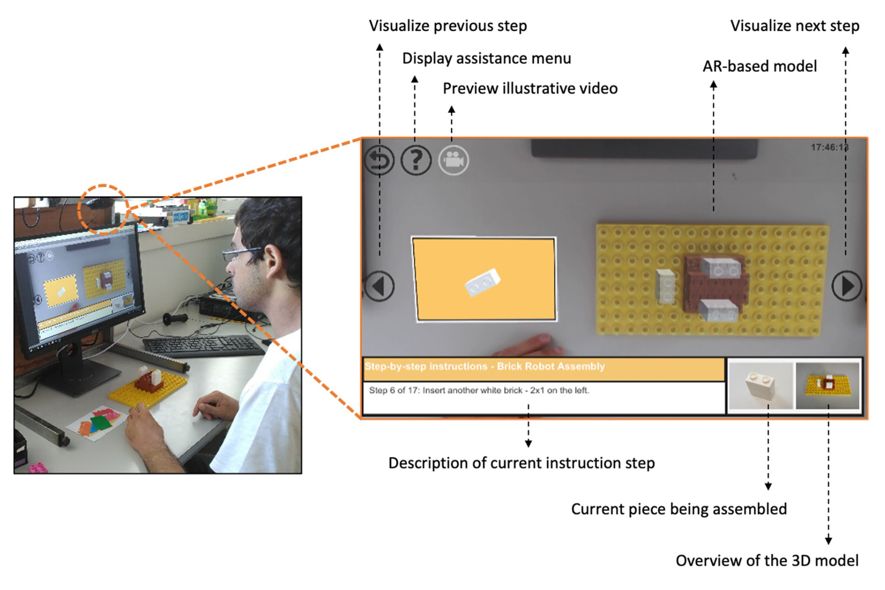
This literature review demonstrates broad support for the preliminary findings previously discussed. These eight case studies, drawn from various domains and with a range of task types and complexity, provide empirical evidence that aligns with the promised improvements to learning transfer, accuracy, and performance compared to traditional instructional methods. However, that effectiveness is shown to depend on various factors such as task complexity, user experience, and application design. We will explore this claim further in the following section.
2.12.1.2 Summary of Study Designs
While the outcomes of these studies provide valuable insights, a comprehensive understanding of their collective significance requires a closer examination of their design and features, as summarized below. Table 2.2 includes columns for Relevance (Rel), and AR/MR treatment type (AR), as well as the instruments used for assessing Workload (Work) and Usability (Use).
Relevance is an overall measure of how closely the study’s task resembles real-world assembly tasks, designed to facilitate the assessment of each study’s ecological validity.21 It was assigned based on the nature and complexity of the task design, using a standardized 5-point scale. Purely abstract tasks were given scores in the 1-3 range, LEGO assemblies 2-4, and realistic tasks 3-5. The final determination was based on the assigned range and relative complexity. Two studies were assigned an overall relevance of zero as they did not meet the criteria for inclusion, as described above.
| Paper | Task | Rel | AR | Work | Use |
|---|---|---|---|---|---|
| Tang et al. (2003) | Abstract LEGO Assembly | 3 | HMD | TLX | |
| Gonzalez-Franco et al. (2017) | Aircraft Door Assembly | 0 | HMD | ||
| Chu et al. (2020) | Architectural Model Assembly | 3 | Mobile | TLX | |
| Büttner et al. (2020) | Industrial Model Assembly | 4 | PAR | ||
| Hoover et al. (2020) | Realistic Aircraft Wing Assembly | 5 | HMD | NPS | |
| Vanneste et al. (2020) | Assembly & Quality Control Tasks | 3 | PAR | MTLX | |
| Havard et al. (2021) | Drill Maintenance Operation | 5 | Mobile | TLX | SUS |
| Kolla et al. (2021) | Realistic Gearbox Model Assembly | 4 | HMD | TLX | SUS |
| Wang et al. (2021) | Abstract Spatial Procedure | 0 | PAR | TLX | |
| Alves et al. (2022) | Simple LEGO Assemblies | 2 | HMD | RTLX |
The reviewed studies employed a wide range of task types, relevance, study designs, and AR/MR technologies. All studies assessed immediate learning effects, while only Büttner et al. (2020) assessed recall or retention. Workload was commonly measured using the TLX or variations thereof. In all but one case, usability was evaluated using the SUS. Hoover et al. (2020), after using the Net Promoter Score (NPS), noted plans to switch to SUS for future studies for improved rigor.
Most studies used paper instructions as the control condition, though two utilized digital equivalents. Some studies, such as Alves et al. (2022), compared multiple AR methods using equivalent task designs to assess their relative advantages. All but one (Büttner et al., 2020) measured task completion times. All studies measured error count, but only Chu et al. (2020) and Tang et al. (2003) measured error types. Chu et al. (2020) and Havard et al. (2021) broke down time by task step.
Several studies incorporated unique design features or methodological approaches. Büttner et al. (2020) focused on training efficiency and sustainability, using quizzes and training cycles as additional measures of knowledge capture. Havard et al. (2021) and Vanneste et al. (2020) were the only studies to measure consultation time, providing insights into help-seeking behavior and AR tracking delays. The latter’s work included participants with cognitive or motor disabilities.
Kolla et al. (2021) and Chu et al. (2020) designed treatments with affordances in mind, emphasizing the importance of leveraging AR’s unique capabilities. The latter employed deliberate instructional design with progressive affordances across treatments. Though it was otherwise excluded from this summary, Wang et al. (2021) demonstrated the benefits of instructional design for AR-assisted learning outcomes.
All studies employed either between-groups or within-groups designs. In order to help control for learning effect, all within-groups studies were counterbalanced via task ordering. All but Vanneste et al. (2020), Havard et al. (2021), and Kolla et al. (2021) employed a toolless task design to control for previous experience.
Finally, it is important to note that neither Chu et al. (2020) nor Hoover et al. (2020) were entirely hands-free designs. The former required some manipulation of the device and the latter utilized a wrist-mounted wireless button for input. Hoover et al. (2020) chose this over voice or gesture control of the HL2, which “are not always feasible in a factory environment.”
2.12.2 Other Factors
2.12.2.1 Technical Considerations
Among technical limitations, general concerns about usability and immaturity are commonly noted (Leonard & Fitzgerald, 2018). Usability is primarily concerned with qualities of the application software, including user interface design, which are outside the scope of this work but obviously critical to the user experience and thus adoption. Technical immaturity relates to display fidelity (e.g., resolution, FOV, brightness, and contrast) and pictorial consistency. Of the latter, robust tracking is the most fundamental. AR devices must provide accurate, stable tracking in a variety of environmental conditions (Azuma, 2016; Gay-Bellile et al., 2015). Related to tracking, and of particular concern to OST AR devices, is occlusion. Accurate compositing and occlusion require an understanding of the structure and illumination of the real world scene. These so-called scene semantics also allow for advanced interactions that build meaningful connections with the world (Azuma, 2017; Fischer, 2015). Finally, VAC mitigation techniques are necessary to eliminate it as a source of user discomfort in fixed focal length displays (Kress, 2020).
Over time, compounded incremental improvements promise to address many of the issues related to display fidelity and world tracking. Fast, accurate, universal eye tracking is premiering in the latest generation of XR devices, enabling other critical technologies. VAC mitigation methods that utilize gaze direction to perform discrete or continuous focus tuning should soon follow, along with foveated displays (Kress, 2020). Scene semantics is an active area of research in the deep learning community, and promising methods are emerging (Roberts & Paczan, 2021). Hard-edged occlusion in OST AR and multifocal displays still seem intractable with modern optical designs. Future advancements will likely rely on innovative methods, including light field and digital holographic displays that allow for layered or even per-pixel scene depth (Kress, 2020). Until then, tradeoffs guided by human factors and a deep understanding of customer needs will be required to deliver solutions with optimal product-market fit.
2.12.2.2 Market Considerations
Meanwhile, market considerations will limit adoption, even for XR systems that are “good enough” for today. Key among those are interoperability, standards, validation, metrics, organizational readiness, and access to content. Interoperability promotes open and/or standardized interfaces between systems. Commercial XR solutions are frequently built on stacks of interconnected technology that rely on other systems for data, etc. As such, interoperability is essential to the development of reliable, cost effective systems (Gay-Bellile et al., 2015). Interoperability depends heavily on the emergence of standards created to promote and enable it.
Here, standards is a broadly interpreted term. It includes publications from “standards bodies” like UL, ISO, and ANSI; similar publications from professional organizations; written frameworks that guide organizational processes and decision-making; and software frameworks, including APIs, libraries, or stacks that facilitate development. Together, these standards provide informational scaffolding, development support, tools, and even legal cover that many organizations need to reduce uncertainty and ease adoption. Relevant examples include the UL 8400 safety standard (UL, 2022), IEEE 1589 AR Learning Experience Model (IEEE, 2020), ETSI’s Augmented Reality Framework (ETSI Augmented Reality Framework, n.d.), and Microsoft’s Mixed Reality Toolkit (Microsoft Mixed Reality Toolkit, n.d.).
Validation and metrics both relate to demonstrating the claimed benefit of these systems. For industrial applications, adoption depends on quantifying the system value in terms of ROI and/or other metrics. Domain-specific modeling methods and evaluation metrics are needed to facilitate direct assessment and comparison of these systems (Kersten-Oertel et al., 2015). Organizational readiness is an overall assessment of a company’s ability to adopt an XR solution. It includes considerations that are both cultural (e.g., leadership, attitude, risk tolerance) and practical (e.g., budget, goals, capacity) in nature (Cook et al., 2019). In part it is a measure of how well equipped the organization is to recognize and leverage the innovative benefits of XR, along with their willingness and ability to adapt to them (Leonard & Fitzgerald, 2018). The final market consideration is access to content. At this stage of adoption, most industrial XR systems will be custom applications, with few consumer-off-the-shelf (COTS) solutions. That said, software frameworks are available that enable low / no-code alternatives for common application types. Also, there is a growing network of specialized development studios and value-added resellers available for XR development.
2.12.3 Gaps and Opportunities
The adoption of AR/MR for manufacturing support and training faces a number of important obstacles. Technical limitations, such as usability issues, display fidelity, tracking robustness, occlusion handling, and vergence-accommodation conflict mitigation, pose significant challenges. While ongoing research and incremental improvements are expected to address many of these concerns over time, tradeoffs guided by human factors and a deep understanding of customer needs will be necessary to deliver optimal solutions in the near term.
Market considerations, including interoperability, standards, validation, metrics, organizational readiness, and access to content, also play a crucial role in the adoption of AR/MR technologies. The development of open and standardized interfaces, along with the emergence of industry standards and frameworks, will be essential to promote cost-effective and reliable systems. Organizations must also be equipped to quantify the value of AR/MR solutions in terms of cost-benefit and other relevant metrics. Organizational and user readiness, encompassing both cultural and practical aspects, will determine a company’s ability to recognize and leverage the innovative benefits of AR/MR technologies. Finally, important social and legal barriers must be addressed.
Fundamental to any industry adoption process is fact-based decision-making. To that end, the case studies reviewed showed AR/MR assisted instruction can help address the needs of manufacturing assembly training, but is not a one-size-fits-all technology. Its effectiveness varies with task complexity, user experience, the specific technology used, and other factors. The exact nature of those relationships is still not well understood.
Meanwhile, researchers should consider whether AR/MR needs to be “better” than traditional methods. This may seem counterintuitive in our age of high-tech wonders, but merely equivalent performance, when combined with other benefits, such as scaleability, cost-efficiency, repeatability, and safety, could be enough to drive adoption in the short term (Kaplan et al., 2021).
When examining the specific technologies used in these studies, HMDs stand out as particularly relevant for manufacturing assembly tasks due to their hands-free interaction methods, spatial registration, and unrestricted field of view. It is still essential to recognize the potential benefits of other AR technologies, such as mobile, projected, and indirect AR, as each has its own unique advantages and limitations. This is especially true as full-featured AR/MR headsets still suffer from technological limitations.
An important and related insight from these studies is the importance of well-designed instructions minimize AR’s limitations while leveraging its affordances. Effective instructional design must consider user needs, abilities, and the context of the task. As discussed in Section 2.11.2, when done correctly, this leads to lower cognitive load, improved performance, and higher user satisfaction.
Despite the promising findings, there are notable gaps and limitations in the existing research. Most studies focus on immediate learning effects, with minimal coverage of long-term retention. The lack of industry recruitment in these studies may limit the ecological validity of their findings, as the tasks and settings may not fully represent real-world manufacturing contexts. Additionally, the highly abstract nature of some tasks (e.g., Tang et al. (2003)), may have hindered some participants’ ability to form the mental models required for learning.
Measuring user satisfaction and usability through instruments like the NASA-TLX and SUS is crucial for assessing the quality of AR/MR implementations and guiding iterative improvements in tool development. By considering user feedback and needs, researchers and developers can create effective, engaging training solutions that address human problems and fit seamlessly into users’ workflows. Adopting a human-centered design approach that incorporates user perspectives throughout the development process is essential for success.
Upon closer review, the heterogeneity of study designs emerges as a key concern. The wide variety of tasks, technologies, methodologies, and measures employed across these studies, while representative of the broader field, may hinder our ability to draw generalizable conclusions about the effectiveness of AR/MR in manufacturing assembly training. This issue is not unique to the domain and is identified in related studies.
Kaplan et al. (2021) conducted a meta-analysis comparing XR training’s efficacy with traditional methods. Specific inclusion criteria were employed to ensure the validity and relevance of the included studies. Twenty-five studies were identified that quantified performance among adults after XR training for cognitive, physical, or mixed tasks. The analysis focused on learning transfer as a critical measure of the direct effect of training on real-world performance, and used a random-effects model to allow for direct comparison of results across diverse study designs. The authors concluded that the heterogeneity of study designs complicates the search for standardized efficacy metrics in XR training. They identified a need for more empirical studies and called for a unified methodological approach in those future explorations.
Further evidence of this gap is found in Moro et al.’s (2021) meta-analysis of VR/AR for anatomy and physiology knowledge acquisition, which found substantial unexplained heterogeneity (\(I^2 = 72\%\)) across eight studies. This suggests that the studies were not measuring the same effect, and makes it difficult to interpret the overall results. The source of this heterogeneity could not be identified by removing outliers or conducting a post hoc sensitivity analysis, and authors ultimately noted it as worthy of further exploration. Here again, it is most likely due to the small number of studies and their diverse designs.
Together, these studies support our interpretation that more uniform and rigorous study designs are required to identify key factors influencing the success of AR/MR interventions in real-world industrial contexts.
As a final note, these case studies span over two decades (2003-2022), during which time AR technology, instructional design, and manufacturing needs have all evolved significantly. This evolution may contribute to the improved results observed in more recent studies and highlights the importance of ongoing research to identify the key factors that influence the success of AR/MR interventions in real-world manufacturing contexts.
2.13 Tools for Development and Assessment
As shown in the previous section, the successful adoption and implementation of AR/MR technologies for manufacturing training requires careful consideration of various factors, including technical feasibility, user acceptance, organizational fit, and economic viability. Researchers and practitioners have developed a variety of methods, frameworks, and instruments to guide this process. These tools ensure that AR/MR solutions are aligned with the specific needs and requirements of the manufacturing domain, and are designed and implemented for users in a way that maximizes their effectiveness.
2.13.1 Development Methods
This section will discuss literature related to methods for specifying, designing, and implementing AR/MR systems for industrial training applications.
2.13.1.1 Specification
Palmarini et al. (2017) proposes a questionnaire based strategic decision making tool to guide the selection of AR systems for maintenance applications. The authors noted that these selections are challenging, with many considerations and a fragmented market of hardware and software solutions. The authors developed 30 questions, grouped into four questionnaires, based on the analysis of AR system characteristics described in related papers. Each questionnaire is designed to address the main hardware, software, and content choices involved, along with the overall suitability of an AR based solution. The author notes that the approach is not validated, does not address economic or ergonomic considerations, and does not generalize to other applications. Additionally, the resulting recommendations are general in nature and exclude VR and MR options.
2.13.1.2 Design
Borsci et al. (2015) describes the importance of alignment between training objectives, contents, method, and expected outcomes, along with the criteria used to evaluate those outcomes, in program design. This alignment is considered essential in the field of training assessment but usually overlooked in VR/AR studies. The authors found that experimental methods ignored important factors, did not employ standardized instruments, and failed to consider organizational or environmental needs. As a result, most studies are not reliable or generalizable. They concluded that a common framework is needed to address these issues in the design and assessment of XR training systems.
Taylor (2021) proposes a framework for adapting live training events to distance learning via immersive environments. Flow Driven Learning Experience Design (FLXD) integrates flow and transactional distance theories into Kolb’s experiential learning model. FLXD describes how the designer can combine traditional and immersive learning methods in a way that best meets the unique needs in each of ELT’s four stages. Taylor’s work was designed to meet the needs of the large, diverse population of learners typical in military training programs.
2.13.1.3 Implementation
Longo et al. (2017) details SOPHOS-MS, a methodological framework and reference implementation for augmented operators in I4.0 based on Lee’s 5C architecture. Their framework adopts a human-centered approach wherein the operator is essential to the optimal integration of real and virtual assets. By providing real time feedback, support, and access to the IT knowledge-base, SOPHOS-MS extends operator capabilities. This is accomplished via a verbal natural language interface using a variety of XR hardware. Their approach is suitable for a both on-line and off-line purposes, including training, collaboration, and support. Tests of this versatile implementation showed that operators trained with it outperform traditionally-trained counterparts throughout a two week period of use.
Geng et al. (2020) notes that industrial AR adoption is hindered, in part, by its reliance on custom software that is rarely reusable or flexible. The authors propose an adaptive no-code authoring system that allows end users to quickly customize and deploy ARWI (AR work instructions). The structure of their system enhances its adaptability to user needs, training environments, work processes, and system configurations. Its data driven design and form-based authoring tool are flexible, modular, and easily extensible. A collaborative implementation approach ensures that process requirements are accurately portrayed. Authoring tasks alternate between engineers and operators as each ARWI moves through four stages of development. Together, these features, and many more described therein, provide an agile alternative to rigid systems bottlenecked by their reliance on experienced developers.
Laviola et al. (2021) identified a lack of standards for the design of AR work instructions, without which choices are based on personal preference. This can lead to unnecessarily complex visuals that negatively impact cost and performance without improving the user experience. The authors proposed a standard process for AR work instruction design that conveys only the information required to accomplish a task, considering real objects involved, end-user needs, and task complexity. Experiments confirmed this “minimal AR” approach did not degrade any measured variable of user performance for various levels of task complexity.
2.13.2 Assessment Methods
Here, we review literature related to the assessment of XR systems, including well-known frameworks and popular instruments.
2.13.2.1 Frameworks
Kersten-Oertel et al. (2015) described their DVV Taxonomy for describing AR image-guided surgical systems, and proposed a framework for their assessment. DVV is an acronym of the three components identified in the taxonomy: data, visualization processing, and view. Those components, their classes and subclasses, and the relationships between them are considered at each step of the surgical scenario. The framework assesses image-guided surgical systems based on technical parameters, reliability, surgical performance, patient outcomes, economics, and social / legal / ethical aspects of use. Each component is evaluated in terms of the primary components of the operating room environment - surgeon, patient, and AR system - and the relationships between them.
Jetter et al. (2018) identified key performance indicators (KPIs) that influence user acceptance of AR for industrial applications. From a list of 16 candidate KPIs identified in a structured literature review and semi-structured expert interviews, the authors identified reduction of time and errors, spatial representation of contextual information, cognitive workload, and ease of use as the most predominant and suitable factors to study. Hypothesizing that the perceived usefulness of AR is influenced by those factors, a theoretical framework based on the Technology Acceptance Model (TAM) was developed to evaluate their effects on user attitudes and intentions. Their qualitative study found that all four KPIs had a positive role in users’ perceived usefulness of AR, and thus their attitude towards and intent to use it. Despite that positive outcome, they also found that users are not yet convinced of AR’s benefits, suggesting the importance of clear and convincing use cases.
Masood & Egger (2019) identify factors that influence the success of industrial AR using a research model based on the Technology, Organization, and Environment (TOE) for the adoption and implementation of innovation. Where implementation success (IS) is often measured in the literature by measures of worker performance improvement, here it refers to the benefits received by the company and their willingness to make further investments. Quantitative analysis found technological considerations, including system configuration along with technology hardware readiness and compatibility, and organizational fit had the most impact on IS. Their study also included a qualitative survey, which identified important challenges to IS. Together, these results provide a valuable, cohesive, and holistic depiction of success factors.
The following year Masood & Egger (2020) extended their prior research with 22 experiments conducted in an industrial setting and designed to identify challenges and success factors for IAR adoption. Using a combination of quantitative and qualitative analysis, the authors found that user acceptance, system stability, and organizational fit were the primary factors for success. Likewise, user rejection, system incompatibilities, technical maturity, and content creation issues were the main challenges. These findings can help guide strategic planning and requirements development for new IAR initiatives. In addition, the study gathered diverse industry feedback related to each context of the TOE model. A key implication of this study is that the relative importance of technological and organizational considerations vary, where the latter are more relevant in industry.
Danielsson et al. (2020) developed and applied a framework to assess the state of AR for industrial assembly applications. From a manufacturing engineering perspective, the authors considered authoring, infrastructure, and validation. Technical maturity concerns focused on the Technical Readiness Levels (TRLs) of available devices. Key requirements and enabling technologies were described. From both perspectives, AR is rapidly improving but still only suitable for limited usage. The authors identified a need for strategic decision-making guidelines for the integration of these systems. Such guidelines should need to be validated and account for economic considerations.
2.13.2.2 Instruments
Witmer and Singer’s (1998) Presence Questionnaire consists of 32 items and measures the degree of presence experienced in a virtual environment. The same publication describes the Immersive Tendencies Questionnaire which measures the tendency of an individual towards immersion with 29 items. Both instruments use a seven-point scale where the endpoints are anchored by opposing descriptors (e.g., not compelling / very compelling).
The Flow State Scale by Jackson & Marsh (1996) is a 36 item instrument used to measure nine dimensions of the flow state described by Csikszentmihályi. It uses a 5-point Likert-type scale anchored with strongly disagree / strongly agree descriptors.
Kennedy et al. (1993) derived the Simulator Sickness Questionnaire from a prior instrument intended to measure real-world motion sickness. Differences in the origin, type, and severity of simulator sickness symptoms demanded it. Users self-report the presence of 16 symptoms ranging from general discomfort to nausea. Each symptom is measured on a scale of none, slight, moderate, severe. Three principal factors of this instrument are interpreted as clusters of oculomotor, disorientation, and nausea symptoms.
Hart’s NASA Task Load Index (TLX, 2006) has been used to estimate workload for almost 40 years. It assesses overall task workload based on the magnitude of mental, physical, and temporal demands imposed by the task, the operator’s emotional response to those demands (effort, frustration), and their perceived ability to meet them (performance). These six factors are weighted based on the factors each subject feels best describe the workload associated with the task under study.
The System Usability Scale (SUS) was designed by John Brooke (1996) to provide a “quick and dirty” assessment of usability for industrial systems, where detailed analysis is often expensive and impractical. The design of SUS was partly informed by his work on ISO 9241-11 (International Organization for Standardization, 2018), a standard for the definition and measurement of usability. It describes usability in terms of effectiveness, efficiency, and satisfaction in the context of use. Because the first two are difficult to compare across systems, SUS focuses on user satisfaction (Brooke, 2013). The resulting score is only indicative in nature. The SUS is not diagnostic and can not pinpoint specific usability issues. Despite its limitations, multiple studies have shown the SUS is a valid and reliable high-level measure that is applicable to a wide range of technologies (Bangor et al., 2008; Sauro, 2011).
2.13.3 Needs and Recommendations
The reviewed methods, frameworks, and instruments share common themes and goals. They aim to guide the specification, design, and implementation of AR/MR solutions to align with the specific needs and requirements of the manufacturing domain, assess the effectiveness and impact of these systems in terms of user acceptance, performance, and organizational fit, and provide structured approaches to support informed decision-making and optimization of AR/MR adoption in manufacturing training.
Several connections can be drawn between the methods discussed. Palmarini et al.’s (2017) questionnaire-based tool and Danielsson et al.’s (2020) framework both focus on guiding strategic decision-making for AR/MR adoption in industrial contexts. The emphasis on alignment between training objectives, contents, methods, and outcomes in Borsci et al. (2015) is echoed in the design considerations of Taylor’s (2021) FLXD framework and Laviola et al.’s (2021) “minimal AR” approach. Additionally, the human-centered approach of Longo et al.’s (2017) SOPHOS-MS framework aligns with the user-centric focus of both Jetter et al.’s (2018) TAM-based framework and Masood et al.’s (2019, 2020) TOE-based model. Crucially, three studies [Palmarini et al. (2017); Borsci et al. (2015); danielsson2020augme] explicitly state the lack of validated tools.
This review highlights the importance of considering user needs, systematic fit, and technical feasibility when designing and implementing AR/MR systems for manufacturing training. It demonstrates the potential of structured approaches to guide the development and assessment of AR/MR solutions, ensuring their alignment with domain-specific requirements to maximize their effectiveness.
Ideally, these frameworks should serve to align all aspects of the system’s design with the business objectives (Borsci et al., 2015), consider user needs related to usability and benefits to deliver a compelling value proposition (Jetter et al., 2018), and address technology and organizational issues that threaten short and long term success (Masood & Egger, 2019). Priority should be given to user acceptance, technical integration, organizational fit, and content creation considerations (Masood & Egger, 2020). However, the need to validate and refine existing tools and frameworks through empirical research in real-world manufacturing contexts is evident (Danielsson et al., 2020).
2.14 Next Steps
This section provides a high-level recap of findings before describing a novel affordance-based approach to study design for AR/MR assisted learning assessment. Finally, it will enumerate the key gaps and limitations identified in the literature, which will provide the basis for the problem statement and study design.
2.14.1 Summary
Turnover in the manufacturing workforce and the lack of skilled labor necessitates scalable, efficient training methods. Furthermore, the shift from mass production to mass customization forces operators to contend with wide variance in the assembly steps required at each workstation. Together, these trends demand innovative methods for operator training and support.
Preliminary studies suggest that emerging AR/MR technologies may provide a solution to address these challenges. These systems offer real-time, contextually relevant instruction, the educational benefits of which are grounded in well-established learning and cognitive theories. However, despite their proclaimed advantages, the manufacturing industry has been slow to embrace augmented training systems. That adoption has been hindered by various factors, including technical limitations, market considerations, and business requirements.
Researchers and practitioners have developed various tools, frameworks, and instruments to help overcome those obstacles. These tools aim to guide the specification, design, implementation, and assessment of AR/MR systems, ensuring their alignment with the unique requirements of the manufacturing industry.
Various case studies have also been conducted within the context of manufacturing. Unfortunately, their results do not yet provide a clear picture of the value proposition of AR/MR in manufacturing training. The research landscape is characterized by a limited number of empirical studies, heterogeneity in study designs, and insufficient validation in real-world manufacturing contexts. These factors make it challenging to draw definitive conclusions about the effectiveness and generalizability of AR/MR interventions in the domain.
2.14.2 An Affordance-Based Approach
To address some of the identified limitations and provide a more comprehensive understanding of the factors influencing the effectiveness of AR/MR in manufacturing training, this research proposes an affordance-based framework. The framework conceptualizes AR/MR technologies as bundles of affordances that, when appropriately leveraged and implemented using best instructional design practices, can lead to improved learning outcomes and performance. The development of this framework is grounded in the theoretical bases and informed by the insights gained from the literature review.
Parsons & MacCallum (2021) emphasizes the benefits of this approach over a feature-based perspective. They claim affordances are more generalizable than specific implementations and enable comparison across contexts, while still being highly contextualized to the domain of interest. Their systematic review of 21 empirical studies found that “studies that did not address any of the key affordances identified as relevant … showed relatively poor learning outcomes” (2021, pp. 89–90). This suggests paying close attention to relevant affordances when designing AR systems may lead to better results.
Through their review, the authors synthesized five key affordances of AR/MR that can enhance learning in medical education: (1) reducing negative impacts like risk and cost, (2) visualizing the invisible, (3) developing practical skills in a spatial context, (4) enabling device portability across locations, and (5) facilitating situated learning grounded in the professional context. By highlighting the rationale for an affordance-based approach and the specific affordances identified as relevant for training in this hands-on domain, the authors provide a strong framework for adopting a similar approach.
While Parsons & MacCallum (2021) affordances captured high-level organizational goals like risk reduction and operational flexibility, our approach focuses on identifying specific benefits that can directly optimize learning processes and outcomes in AR/MR manufacturing training environments. Rather than focusing on broad potential benefits, our affordances directly apply established learning theories and instructional principles that promote hands-on practice, reducing cognitive load, improving spatial awareness, and creating an intuitive user experience within the manufacturing training context. The ten affordances are summarized in Table 2.3.
| # | Affordance | Description |
|---|---|---|
| 1 | Task Instructions | A description of how to complete the task. |
| 2 | Hands-On Engagement | The learning method involves physical interaction with the subject matter. |
| 3 | Direct View of Work | The work area is viewed directly, without requiring a shift of focus from the workspace to a separate display. |
| 4 | Freedom of Movement | The device does not hinder the user’s movement with a bulky or tethered design. |
| 5 | Step-Wise Guidance | Instructions are presented sequentially, adapting to user needs and pace. |
| 6 | Feedback Mechanisms | The system provides real-time feedback on user actions. |
| 7 | Workspace Integration | Instructional materials are integrated with the workspace. |
| 8 | Sensor-Based Interaction | The system is controlled with sensor-based input devices, eliminating the need for physical controllers. |
| 9 | User-Centric Display | Instructions are displayed in the user’s view, rendered from their perspective. |
| 10 | Freeform Interaction | The system allows for natural manipulation of the workpiece. |
These affordances were identified based on their direct applicability to the learning tasks within an AR/MR environment, their alignment with a carefully chosen set of instructional treatments, and their foundation in educational theories known to influence learning outcomes positively. Each affordance serves to operationalize these theories within the context of the experimental design, with the expectation that their integration into the instructional treatments will lead to measurable improvements in learning and performance.
As discussed in Section 2.11.2, the theoretical benefits underpinning these affordances are rooted in educational theories that are particularly relevant to AR/MR learning environments. Active learning theories, including experiential learning theory support the idea that learning is enhanced through direct experience and reflection, which is fundamental to several of the identified affordances, including “Hands-On Engagement,” “Step-Wise Guidance,” and “Feedback Mechanisms.”
Flow theory emphasizes the importance of a state of heightened focus and immersion for optimal learning, which is fostered by affordances that engage users in a compelling and intuitive way, such as “Egocentric Display” that ensures the instructional content is seamlessly integrated into the user’s field of view.
The theory of embodied cognition posits that cognitive processes are deeply intertwined with the physical actions of the body. In an AR/MR setting, affordances that align with this theory, such as “Freeform Interaction,” allow for a more natural and intuitive learning process by leveraging the body’s movement and spatial orientation. Other constructivist theories, including animate vision and spatial cognition theory are similarly represented by “User-Centric Display,” and “Workspace Integration.”
Cognitive load theory provides a framework for understanding how information is processed and suggests that well-designed instructional materials can reduce unnecessary cognitive load, making learning more efficient. This directly relates to affordances like “Sensor-Based Interaction” which simplifies the user interface, and “Workspace Integration,” which eliminates context switching associated with referencing instructions away from the work surface.
Lastly, the affordances have been selected with educational best practices in mind, ensuring that they not only align with theoretical perspectives but also adhere to the principles of effective instruction design, such as clarity, engagement, and scaffolding.
This design links the chosen affordances with the framework for instructional design with AR/MR augmentation for industrial training applications that was proposed in Section 2.11.3 and illustrated by Figure 2.19.
2.14.3 Advancing the Research
The findings of this literature review underscore the need for further research to address the gaps and limitations in the current understanding of AR/MR technologies in manufacturing training. To advance the field, future studies should prioritize the following nine considerations, listed in no particular order:
Address Ecological Validity: Conducting research in real-world industrial settings, with suitable tasks and participants to help ensure that the findings are directly applicable and relevant to the unique challenges and requirements of manufacturing training.
Incorporate Instructional Design Best Practices: Firmly grounding study designs in learning and cognitive theories will optimize the effectiveness of AR/MR training solutions. By leveraging these principles, researchers can provide a model for future implementations and contribute to the development of evidence-based guidelines for designing AR/MR training programs.
Employ Rigorous Methodologies: Using well-controlled experimental designs, reliable and valid measurement instruments, and appropriate statistical analyses to establish the reliability and generalizability of the findings.
Compare Multiple AR/MR Technologies: Comparing Mobile, HMD, Projected, and Indirect methods to provide insights into their relative effectiveness and suitability for different manufacturing training scenarios.
Study Learning Outcomes Hollistically: Providing a more comprehensive understanding of the impact of these technologies on skill acquisition and maintenance over time by assessing training outcomes not just in terms of immediate learning effects but also longer term recall and retention
Collect User Feedback: Including data and analysis on user satisfaction, usability, and workload to inform iterative improvement and user-centered design, and help ensure that the resulting systems are effective, engaging, and intuitive for the target audience.
Use an Affordance-Based Approach: Designing treatments and interpreting their effects not in terms of transient hardware capabilities, but as a bundle of affordances each with corresponding theoretical benefits.
Apply a Standard Methodology: Reducing the heterogeneity of study designs will facilitate the direct comparison of results and synthesis of findings, improve their collective generalizability, and provide a common language for researchers and practitioners alike.
Provide Practical Recommendations: Framing research and findings in a way that supports the successful design and implementation of these systems, and translating those into fact-based decision and planning frameworks will accelerate industry adoption.
This proposed affordances framework serves as a foundation for the current study, which, in part, aims to empirically validate its application in a real-world manufacturing training context. This work will apply the affordance framework to the design of the treatments, allowing us to interpret effects based on the underlying benefits, which are ephemeral, rather than any transient technologies. We trust this will provide valuable new insights into the most influential factors in the value of augmented instruction for learning, recall, and retention, thereby contributing to the development of best practices for their implementation in real-world industrial settings.
2.14.4 Closing
This literature review has provided a comprehensive examination of the current state of research in the domain, critically analyzing empirical studies that assessed the efficacy of AR/MR interventions while also identifying persistent gaps, limitations, and adoption challenges. Moreover, the review introduces a novel affordance-based framework as a theoretically-grounded approach to guide the design and evaluation of AR/MR training solutions. The following chapter will articulate the specific problem statement, research questions, and hypotheses that guide this endeavor.
Web of Science: https://www.webofscience.com/↩︎
Scopus: https://www.scopus.com/↩︎
Semantic Scholar: https://www.semanticscholar.org/↩︎
Google Scholar: https://scholar.google.com/↩︎
scite_: https://scite.ai/↩︎
Inciteful: https://inciteful.xyz/↩︎
ResearchRabbit: https://www.researchrabbit.ai/↩︎
Connected Papers: https://www.connectedpapers.com/↩︎
Litmaps: https://www.litmaps.com/↩︎
Ivan Sutherland is a distinguished computer scientist, known for pioneering work in computer graphics and interactive computing. During his tenure at the University of Utah, he co-founded real-time graphics pioneer Evans & Sutherland, and fostered a generation of computer graphics experts. Sutherland is credited with creating the first graphical user interface and fundamentally changing computer-aided design. He has received several prestigious awards for his lifelong contributions, including the ACM Turing Award (1988) and the Kyoto Prize (2012).↩︎
In this context the term display can apply to devices that present information for any human sense. For example, a speaker is an audio display, and haptic devices are displays for the senses related to touch.↩︎
Dr. Kress was principal optical architect on the Google Glass project before joining Microsoft in a similar role for their first and second generation HoloLens devices. He has since returned to Google as their Director for XR Engineering. He serves as Vice President of the International Society for Optics and Photonics (SPIE). Dr. Kress’ publications are heavily leveraged throughout this section. SPIE Profile: https://spie.org/profile/Bernard.Kress-16356↩︎
CAVE is a recursive acronym and reference to the allegory of the Cave from Plato’s Republic, in which a philosopher contemplates perception, reality, and illusion. en.wikipedia.org/wiki/Cave_automatic_virtual_environment↩︎
3D registration for navigational purposes is commonly achieved using a combination of GPS related technologies, but the results are not sufficiently accurate for AR applications.↩︎
Modulation transfer function (MTF) is a quantitative measure of the ability of an optical system to reproduce contrast detail. It is known to correlate with our perception of image quality. MTF is the magnitude of the optical transfer function. https://en.wikipedia.org/wiki/Optical_transfer_function↩︎
This claim may well be tested in 2024, with the recent introduction of Apple’s Vision Pro, a state of the art video pass-through device, and Meta’s Quest 3, which is positioned primarily as a VR device, but also offers video-pass through.↩︎
See Section 2.11.2 for a fuller discussion of active learning and related theories of learning and cognition.↩︎
Jeremy Bailenson is a prominent figure in the field of VR and its applications, particularly in education and behavioral change. As the founding director of Stanford University’s Virtual Human Interaction Lab, his work focuses on how VR can affect users’ cognition, behavior, and social interactions.↩︎
Mihály Csikszentmihályi was a renowned Hungarian-American psychologist and researcher whose work has been influential in various fields, including psychology, education, and business. His last name is pronounced me-high chick-sent-me-high.↩︎
In learning theory, a schema is an organized pattern of thought or behavior that helps in processing, interpreting, and storing information in long-term memory. Schemas allow learners to categorize and assimilate new information efficiently by integrating it with existing knowledge.↩︎
In the context of this review, ecological validity pertains to how well the study’s task design mirrors authentic manufacturing assembly tasks in terms of complexity, tools, and environment. Studies with higher ecological validity would, therefore, be considered more relevant and informative for understanding the effectiveness of AR technologies in real-world industrial settings.↩︎
2.8.2 Social Comfort
Social comfort concerns are primarily related to privacy and acceptable public use. The suitability of a design’s aesthetic and form factor is one consideration (Cook et al., 2019), as is allowing an unaltered view of the wearer’s eyes. The number and packaging of outward-facing sensors, and the nature and use of the data they collect, entails a number of public privacy concerns that influence social comfort (Kress, 2020). Each of these balance the wearer’s willingness and right to wear the device with the needs of the public, and are strongly influenced by the context and manner of intended use. Bass et al. (1997) describe the ultimate test of social comfort as “whether or not a wearer is able to gamble in a Las Vegas casino without challenge.”